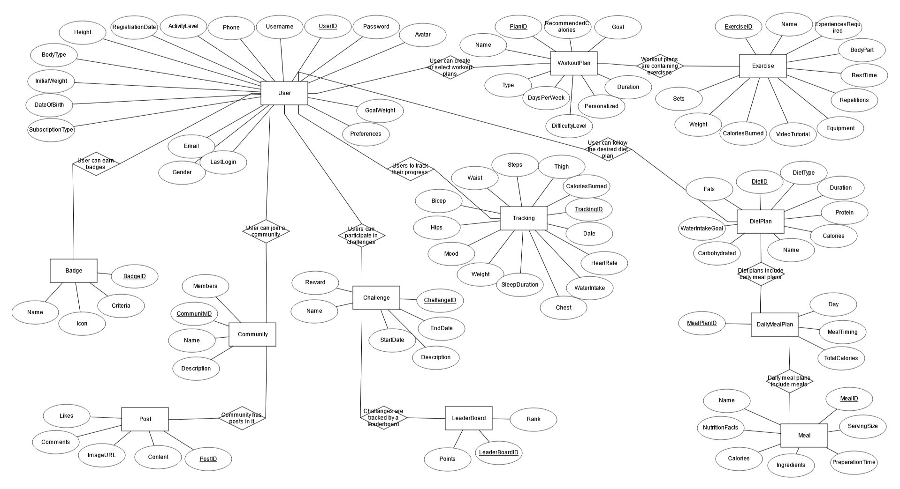
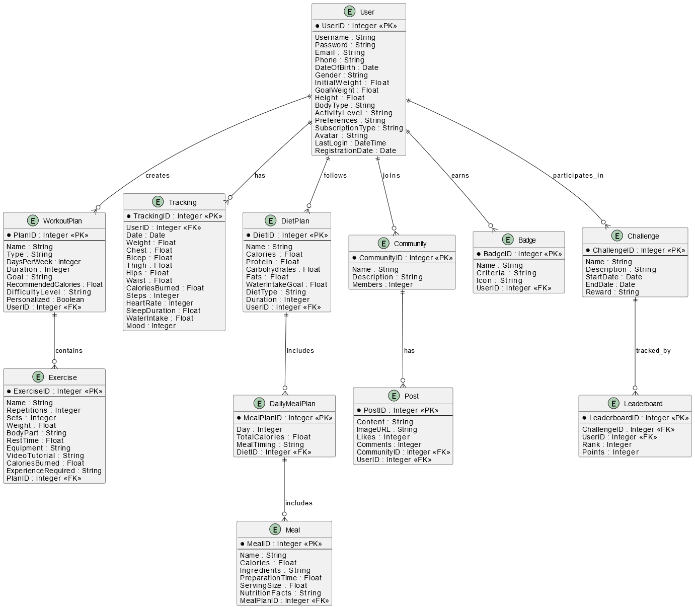

Rendszertervezés
Tartalomjegyzék
- 1. Bevezetés
- 2. Felhasználói felület
- 3. Adatmodellek
- 3.1. Adatbázis kezelő kiválasztása
- 3.2. Szemantikai adatmodell
- 3.3. Relációs adatmodell
- 3.4. Az adatbázis kezelővel kapcsolatot tartó osztályok
- 4. A funkcionális modell kiegészítése
- 5. Egyéb dokumentációk
1. Bevezetés
A fitness applikáció egy sokoldalú és innovatív alkalmazás, amely a modern felhasználók igényeit figyelembe véve készül. Célja, hogy támogassa a felhasználókat a különböző edzéstervek kialakításában, nyomon követésében és a gyakorlatok hatékony végrehajtásában, továbbá az étrendek összeállításában.
A fitnesz világa folyamatosan fejlődik, és az emberek egyre nagyobb hangsúlyt fektetnek egészségük és fittségük megőrzésére. A rendszer lehetőséget biztosít arra, hogy a felhasználók személyre szabott edzésterveket állítsanak össze, figyelembe véve saját céljaikat, képességeiket és preferenciáikat.
A felhasználói élmény maximalizálása érdekében a rendszer intuitív grafikus felhasználói felülettel rendelkezik, amely lehetővé teszi a gyors és egyszerű navigációt. A felhasználók számára készült edzésterv létrehozásának folyamata könnyen érthető lesz, hogy bárki kezelni tudja, kortól és nemtől függetlenül.
2. Felhasználói felület (GUI) és felületi koncepciós terv
A grafikus felhasználói felület (GUI) és a felületi koncepciók megtervezése során alapvető célunk, hogy a felhasználók számára intuitív és vonzó élményt nyújtsunk.
2.1. GUI tervezési specifikációk
- Főbb elemek:
- Főmenü: A főmenü tartalmazza az applikáció fő funkcióit, például az edzésterv létrehozását, edzések követését és felhasználói profilok kezelését. Az elemek logikusan és könnyen hozzáférhetően helyezkednek el.
- Programok ablak: Ez az ablak a felhasználók által létrehozott edzésterveket és programokat tartalmazza, lehetőséget adva azok gyors hozzáadására és kezelésére. Az új edzésterv létrehozásához szükséges gomb intuitívan helyezkedik el.
- Tulajdonságok ablak: A választott edzésterv részleteit megjelenítő ablak, amely lehetővé teszi a felhasználók számára, hogy módosítsák az edzés paramétereit, például az intenzitást, időtartamot és ismétléseket.
- Animációs ablak: Ez az ablak a felhasználók számára lehetőséget ad a gyakorlatok vizuális megjelenítésére, amely segíti a helyes végrehajtás elsajátítását.
- Navigációs sáv: Az alkalmazás tetején található navigációs sáv, amely lehetővé teszi a felhasználók számára, hogy gyorsan hozzáférjenek a különböző funkciókhoz, mint például az edzésterv, edzésnapló, gyakorlatok és felhasználói profil.
- Oldalsó menü: Bal oldalon elhelyezkedő menü, amely a különböző edzéstípusokat és programokat listázza. Itt található a lehetőség új edzésterv létrehozására is.
- Középső tartalom terület: Az applikáció fő része, ahol a felhasználók interakcióba lépnek a kiválasztott elemekkel, például edzésterv létrehozása vagy gyakorlatok végrehajtása.
- Színpaletta:
- Az alkalmazás színpalettája a fitness és egészség témakörét tükrözi, színek, mint a zöld, kék és narancs használatával.
- Az alap háttér színe világos, míg a gombok és interakciós elemek kontrasztos színnel vannak kiemelve a könnyebb észlelhetőség érdekében.
- Tipográfia:
- A betűtípusok kiválasztásánál könnyen olvasható, modern sans-serif betűtípusokat használunk, amelyek jól alkalmazkodnak a digitális környezethez. A fő címekhez nagyobb betűméretet használunk, míg a tartalmi szöveghez kisebbet.
2.2. Felületi koncepciók
- Design: Minden felhasználói felület elemnek egységes stílusa van, amely elősegíti a vizuális koherenciát. A gombok, listák, és egyéb elemek azonos megjelenéssel bírnak, így a felhasználók könnyen kiismerhetik magukat az alkalmazásban.
- Átmenetek és animációk: Az elemek közötti átmenetek és animációk finomak és zökkenőmentesek, hogy a felhasználói élmény sima legyen. Például a menü megnyitásakor vagy bezárásakor lágy animációkat használunk.
- Kép- és ikonhasználat: Az alkalmazásban használt ikonok és képek figyelemfelkeltőek és relevánsak, támogatva a felhasználói élményt. Az ikonok egyértelműen jelzik a funkciókat, míg a képek motiváló és inspiráló hatással bírnak.
2.3. Felhasználói élmény (UX) optimalizálása
- Könnyű hozzáférhetőség: Az applikáció tervezésénél figyelembe vesszük a különböző felhasználói igényeket, beleértve a mozgáskorlátozottakat is. A navigációs elemek megfelelően méretezettek és elérhetőek a különböző eszközökön.
- Felhasználói tesztelés: A GUI elemeit felhasználói tesztelések során validáljuk, lehetővé téve a felhasználói visszajelzések figyelembevételét a végső tervezésben. A tesztelés célja, hogy megértsük a felhasználói szokásokat és preferenciákat, majd ezeket integráljuk a tervezésbe.
- Szcenárió-alapú tervezés: A felhasználói élmény javítása érdekében szcenáriókat dolgozunk ki, amelyek bemutatják a tipikus felhasználói interakciókat. Ezeket a szcenáriókat felhasználjuk a felhasználói útvonalak megtervezéséhez és optimalizálásához.
2.4. Jövőbeli fejlesztések
- Felhasználói visszajelzések integrálása: : A jövőbeli frissítések során folyamatosan gyűjtjük és elemezzük a felhasználói visszajelzéseket, hogy a felület még inkább a felhasználói igényekhez igazodjon.
- Új funkciók bevezetése: Az applikáció fejlődésével új funkciókat és lehetőségeket integrálunk, mint például a közösségi megosztás, csoportos edzések és kihívások, amelyek gazdagítják a felhasználói élményt.
3. Adatmodellek
3.1. Adatbázis-kezelő kiválasztása
A rendszer az SQL adatbázis-kezelőt használja a felhasználói és edzésadatok tárolására. A MySQL vagy PostgreSQL adatbázisok közül fogunk választani a projekt igényeinek megfelelően. A kapcsolatot az alkalmazás funkcionális részei és az adatbázis-kezelő között JDBC (Java Database Connectivity) segítségével fogjuk megvalósítani.
3.2. Szemantikai adatmodell
A szemantikai adatmodell a következő entitásokat fogja tartalmazni az applikációban:
Entitások és attribútumok:
- User (Felhasználó):
- UserID: Egyedi azonosító.
- Username: Felhasználónév.
- Password: Jelszó.
- Email: Email cím.
- Phone: Telefonszám.
- DateOfBirth: Születési dátum.
- Gender: Nem (férfi/nő/egyéb).
- InitialWeight: Kezdeti testsúly.
- GoalWeight: Célsúly.
- Height: Magasság.
- BodyType: Testtípus (mezomorf, endomorf, ektomorf).
- ActivityLevel: Napi aktivitási szint.
- Preferences: Személyes beállítások.
- SubscriptionType: Előfizetési típus.
- Avatar: Profilkép.
- LastLogin: Utolsó bejelentkezés időpontja.
- RegistrationDate: Regisztráció időpontja.
- Friends: Barátok listája.
Kapcsolatok:
- 1:n: Edzéstervek, étrendek, értesítések, nyomonkövetési adatok, jelvények, statisztikák.
- n:m: Barátok, közösségek, kihívások.
- WorkoutPlan (Edzésterv):
- PlanID: Egyedi azonosító.
- Name: Edzésterv neve.
- Type: Edzésterv típusa.
- DaysPerWeek: Heti edzésnapok száma.
- Duration: Időtartam (hetekben).
- Goal: Edzésterv célja.
- RecommendedCalories: Ajánlott napi kalóriabevitel.
- DifficultyLevel: Nehézségi szint.
- Personalized: Személyre szabott-e.
Kapcsolatok:
- 1:n: Gyakorlatok.
- n:m: Felhasználók.
- Exercise (Gyakorlat):
- ExerciseID: Egyedi azonosító.
- Name: Gyakorlat neve.
- Repetitions: Ismétlések száma.
- Sets: Sorozatok száma.
- Weight: Súly.
- BodyPart: Testrész.
- RestTime: Pihenőidő.
- Equipment: Szükséges eszköz.
- VideoTutorial: Videó linkje.
- CaloriesBurned: Elégetett kalóriák.
- ExperienceRequired: Ajánlott edzettségi szint.
Kapcsolatok:
- Tracking (Nyomonkövetés):
- TrackingID: Egyedi azonosító.
- UserID: Felhasználói azonosító.
- Date: Dátum.
- Weight: Testsúly.
- Chest: Mellkas méret.
- Bicep: Bicepsz méret.
- Thigh: Comb méret.
- Hips: Csípő méret.
- Waist: Derék méret.
- CaloriesBurned: Elégetett kalóriák.
- Steps: Lépésszám.
- HeartRate: Átlagos pulzus.
- SleepDuration: Alvás időtartama.
- WaterIntake: Vízfogyasztás.
- Mood: Hangulat (1-10).
Kapcsolatok:
- DietPlan (Étrend):
- DietID: Egyedi azonosító.
- Name: Étrend neve.
- Calories: Napi kalória bevitel.
- Protein: Fehérje.
- Carbohydrates: Szénhidrát.
- Fats: Zsírok.
- WaterIntakeGoal: Napi vízfogyasztási cél.
- DietType: Étrend típusa.
- Duration: Időtartam.
Kapcsolatok:
- 1:n: Napi étkezési tervek.
- DailyMealPlan (Napi étrend):
- MealPlanID: Egyedi azonosító.
- Day: Nap.
- TotalCalories: Összes kalória.
- MealTiming: Étkezések időpontja.
Kapcsolatok:
- Meal (Étel):
- MealID: Egyedi azonosító.
- Name: Étel neve.
- Calories: Kalóriák.
- Ingredients: Összetevők.
- PreparationTime: Elkészítési idő.
- ServingSize: Adag mérete.
- NutritionFacts: Részletes tápanyagértékek.
Kapcsolatok:
- Community (Közösség):
- CommunityID: Egyedi azonosító.
- Name: Közösség neve.
- Description: Leírás.
- Members: Tagok száma.
Kapcsolatok:
- n:m: Felhasználók, posztok.
- Post (Poszt):
- PostID: Egyedi azonosító.
- Content: Tartalom.
- ImageURL: Csatolt kép.
- Likes: Kedvelések száma.
- Comments: Hozzászólások.
Kapcsolatok:
- n:m: Felhasználók, közösségek.
- Badge (Jelvény):
- BadgeID: Egyedi azonosító.
- Name: Jelvény neve.
- Criteria: Feltételek.
- Icon: Jelvény ikonja.
Kapcsolatok:
- Challenge (Kihívás):
- ChallengeID: Egyedi azonosító.
- Name: Kihívás neve.
- Description: Leírás.
- StartDate: Kezdési időpont.
- EndDate: Befejezési időpont.
- Reward: Jutalom.
Kapcsolatok:
- Leaderboard (Eredménytábla):
- LeaderboardID: Egyedi azonosító.
- ChallengeID: Kihíváshoz tartozó rangsor.
- UserID: Felhasználói azonosító.
- Rank: Helyezés.
- Points: Pontok.
Kapcsolatok:
- 1:n: Kihívások, felhasználók.
3.3. Relációs adatmodell
A relációs adatmodell az adatok relációkban való tárolását jelenti, ahol a felhasználók, edzéstervek, gyakorlatok és az elért eredmények különböző táblákban kerülnek tárolásra. A táblák között külső kulcsokkal biztosítjuk a kapcsolódást.
A relációs adatmodellt megvalósító táblák pedig a következőek lesznek:
ER DIAGRAM:

KAPCSOLATI TÁBLA:

3.4. Az adatbázis-kezelővel kapcsolatot tartó osztályok
Az adatbázis kezelővel kapcsolatot tartó osztályok egy Java alapú alkalmazásban általában a DAO (Data Access Object) mintát követik, így mi is ezt a megoldást választottuk.
- UserDAO: A felhasználók adataival kapcsolatos összes műveletet (CRUD) kezeli. Ide tartozik a felhasználók regisztrációja, az adataik frissítése, törlése, valamint azok lekérdezése különböző attribútumok alapján, mint például a felhasználói azonosítók, jelszavak, email címek, telefonszámok, nem, születési dátum, kezdeti és célsúly. Továbbá kezeli a felhasználói értesítések létrehozását, időzítését és törlését, valamint lehetőséget biztosít barátok hozzáadására és eltávolítására. A barátlisták és kapcsolódó interakciók kezelésére külön funkciókat biztosít, például barátok közötti üzenetküldés előkészítésére.
- ExerciseDAO: A gyakorlatok adataival kapcsolatos összes műveletet (CRUD) kezeli. Ez magában foglalja a gyakorlatok hozzáadását, frissítését, törlését és részletes lekérdezését attribútumok, például név, ismétlésszám, sorozatszám, használt súly, célzott testrész és szükséges eszközök alapján. Támogatja a videós útmutatók tárolását és linkelését, lehetőséget adva a felhasználóknak, hogy könnyen megismerjék az egyes gyakorlatok helyes végrehajtását. Emellett elemzéseket végezhet, például hogy melyik gyakorlatot végezték el a legtöbbször egy adott időszakban.
- DietPlanDAO: Az étrendek és étkezési tervek kezeléséért felelős osztály, amely az étrendek létrehozását, frissítését, törlését és attribútumok, például kalóriabevitel, makrotápanyagok (fehérje, szénhidrát, zsír) és étrend típusa (vega, keto, stb.) alapján történő lekérdezését biztosítja. Kezeli a napi étkezési terveket, beleértve az egyes étkezések, összetevők és tápanyagtartalom részletezését. Emellett lehetőséget biztosít az étrendekhez kapcsolódó statisztikák, például napi kalóriabevitel összehasonlítására.
- TrackingDAO: A felhasználók nyomonkövetési adataival foglalkozó osztály, amely a testsúly, mérések (mellkas, bicepsz, comb, csípő, derék), alvás időtartama, vízfogyasztás, elégetett kalóriák, lépésszámok és pulzusadatok tárolását és frissítését végzi. Az adatok lekérdezhetők dátum, felhasználói azonosító vagy más attribútum alapján, hogy támogassák a felhasználók fejlődésének vizuális elemzését, például grafikonok és diagramok készítésével. Továbbá lehetőséget nyújt a hangulatadatok elemzésére és trendek feltárására, mint például a súlycsökkenés vagy az izomtömeg-növekedés időbeli változásai.
- EntityDAO: Az egyéb entitások (például étrend, egyedi edzés típusok) kezelésével kapcsolatos műveletek (CRUD). Az entitások típusait és hozzárendelt információkat kezeli.
- CommunityDAO: A közösségekkel kapcsolatos műveletek (CRUD) kezelését végzi, beleértve a közösségek létrehozását, leírásuk frissítését, tagok hozzáadását és eltávolítását. Támogatja a közösségi posztok létrehozását, módosítását és törlését, valamint a hozzászólások kezelését. Lehetővé teszi a közösségi aktivitás elemzését, például hogy melyik poszt kapta a legtöbb kedvelést vagy hozzászólást.
- BadgeDAO: A felhasználók által megszerezhető jelvények kezelését végzi, beleértve a jelvények létrehozását, feltételek (pl. teljesített kihívások, elégetett kalóriák) frissítését, és a felhasználókhoz történő hozzárendelést. Támogatja a jelvények vizuális megjelenítését, például ikonok vagy grafikus formában, valamint a megszerzett jelvényekhez kapcsolódó statisztikák generálását.
- ChallengeDAO: A kihívások és az ezekhez kapcsolódó eredménytáblák kezeléséért felelős osztály. Feladata a kihívások létrehozása, leírásuk és jutalmaik frissítése, valamint a felhasználók részvételének nyomon követése. Eredménytáblákat generál, amelyek alapján a felhasználók teljesítményét rangsorolja, figyelembe véve a megszerzett pontokat, teljesített célokat vagy más mérföldköveket.
- LeaderboardDAO: Az eredménytáblák generálására és kezelésére szolgáló osztály. Képes felhasználói teljesítményadatok alapján rangsorolni a résztvevőket különböző kihívásokban. Ezenkívül támogatja a globális vagy közösségi szintű ranglisták létrehozását, például a legtöbb pontot elért felhasználók vagy a legtöbb kihívást teljesítők számára.
4. A funkcionális modell kiegészítése
A funkcionális modell további funkciókat tartalmaz, mint például a felhasználói visszajelzések és statisztikák nyomon követése, valamint a gamifikációs elemek beépítése, amelyek ösztönzik a felhasználókat a folyamatos fejlődésre.
4.1 Regisztrációs folyamat
Alapfolyamat:
- A felhasználó megadja a regisztrációhoz szükséges adatokat (név, email, jelszó, célsúly, kezdeti súly).
- Az adatok validálása (pl. e-mail formátum ellenőrzése, jelszó erősségének vizsgálata).
- Az adatok mentése az adatbázisba a UserDAO segítségével.
- A sikeres regisztráció után a felhasználó belépési képernyőre kerül.
Alternatívák:
- Ha az email cím már regisztrálva van, a rendszer figyelmeztetést ad és lehetőséget nyújt a jelszó visszaállítására.
- Ha a jelszó nem felel meg a követelményeknek, hibaüzenet jelenik meg, és a felhasználó új jelszót adhat meg.
4.2 Edzéstervek kezelése
Alapfolyamat:
- A felhasználó létrehoz egy új edzéstervet az edzéstervekhez tartozó adatok (pl. gyakorlatok, ismétlések, sorozatok stb.) megadásával.
- A program hozzáadja a megfelelő gyakorlatokat a tervhez a ExerciseDAO használatával.
- Az edzésterv mentése az adatbázisba a PlanDAO segítségével.
Alternatívák:
- Ha a felhasználó el akar távolítani egy gyakorlatot az edzéstervből, a rendszer lehetőséget biztosít erre a műveletre.
- Hiba esetén (pl. nem létező gyakorlat hozzáadása) figyelmeztetést küld a rendszer, és visszalépésre ad lehetőséget.
4.3 Edzéskövetés
Alapfolyamat:
- A felhasználó az edzés végén megadja az aktuális fizikai adatait (pl. súly, mellkas, bicepsz).
- Az adatok validálása (pl. negatív értékek kizárása).
- Az adatok mentése az adatbázisba a TrackingDAO segítségével.
- A felhasználó visszajelzést kap a fejlődéséről grafikus formában.
Alternatívák:
- A felhasználó korábbi adatait is módosíthatja, ha elírás történt, vagy hibás adatokat rögzített.
- Ha az adatok mentése sikertelen, a rendszer visszajelzést küld a felhasználónak, és lehetőséget biztosít az újbóli mentésre.
4.4. Hibakezelés és alternatív adatáramlások
- A rendszer hibás adatbevitel esetén mindig visszajelzést ad a felhasználónak, és lehetőséget biztosít a hibák kijavítására.
- Az alternatív adatáramlásokat olyan helyzeteken fogjuk használni, ahol például hálózati hiba, adatbázis hiba, vagy egyéb váratlan körülmény lép fel. A rendszer ilyen esetekben megőrzi a felhasználói adatokat, és lehetőséget biztosít a hibás művelet megismétlésére.
5. Egyéb dokumentációk
5.1 Fontosabb algoritmusok és adatszerkezetek
A fitnesz alkalmazásban a következő főbb algoritmusokat és adatszerkezeteket kell dokumentálni:
5.1.1. Algoritmusok:
- Felhasználói adatok titkosítása: A felhasználói jelszavak és egyéb érzékeny adatok biztonságos tárolásához titkosítási algoritmust használunk. A jelszavakat a rendszer bcrypt vagy SHA-256 hash-eléssel tárolja, hogy biztosítsa az adatok integritását.
- Edzésterv és étrend generálás: A felhasználó által megadott célok, súly és edzésintenzitás alapján a rendszer automatikusan létrehoz edzésterveket és étrendeket. Az algoritmus figyelembe veszi a felhasználó által megadott testadatokat, mint pl. súly, izomtömeg és célzott testrészek.
Analízis modell
Tartalomjegyzék
- 1. Bevezetés
- 2. Kezdeti osztálydiagram
- 2.1. Main osztály
- 2.2. Felhasználói felület
- 2.3. Üzleti logika
- 2.4. Üzleti logika menedzser
- 2.5. Erőforrás-kezelő
- 2.6. Entitásgyár
- 2.7. Entitáskezelő
- 2.8. Komponens
- 2.9. Entitás
- 2.10. Gyűjtemény
- 2.11. Mentéskezelő
- 2.12. Sorosítás
- 2.13. Felhasználókezelő
- 3. Kezdeti osztálydiagram elemzése
- 4. Teljes osztálydiagram
- 4.1. Main osztály
- 4.2. Fő osztály
- 4.3. Felhasználói felület
- 4.4. Üzleti logika
- 4.5. Üzleti logika menedzser
- 4.6. Erőforrás-kezelő
- 4.7. Entitásgyár
- 4.8. Entitáskezelő
- 4.9. Komponens
- 4.10. Entitás
- 4.11. Gyűjtemény
- 4.12. Mentéskezelő
- 4.13. Sorosítás
- 4.14. Felhasználókezelő
- 4.15. Cél
- 4.16. Motivációkezelő
- 4.17. Kihívás
- 4.18. Étrend
- 4.19. Étrend Napi Terv
- 4.20. Étel
- 4.21. Recept
- 4.22. Bevásárlólista
- 4.23. Edzésterv
- 4.24. Gyakorlat
- 4.25. Edzésterv Napló
- 4.26. Teljesítmény Statisztika
- 4.27. Statisztikai Jelentés
- 4.28. Vizuális Statisztikák
- 4.29. Integráció
- 4.30. API Kapcsolat
- 4.31. Időzítő
- 4.32. Felhasználói Beállítások
- 4.33. Hírcsatorna
- 4.34. Üzenetküldő Rendszer
- 4.35. Szakértői Tanácsok
- 4.36. Alkalmazás Napló
- 4.37. Bejelentkezési Napló
- 4.38. Közösségi Szavazások
- 4.39. Személyre Szabott Ajánlások
- 4.40. Adatbázis-kezelő
- 4.41. Mérföldkő
- 4.42. Rendszerfigyelő
- 4.43. Gamifikációs Rendszer
- 4.44. Jelvény
- 4.45. Eredménytábla
- 4.46. Értesítési Kezelő
- 4.47. Statisztikai Elemző
- 4.48. Külső Eszközök Szinkronizáló
- 4.49. Bejelentkezési Védelem
- 4.50. Helyalapú Szolgáltatások
- 4.51. Személyes Adatvédelem
- 4.52. Edzői Profil
- 4.53. Időjárási Adatkezelő
- 4.54. Automatikus Emlékeztető
- 4.55. Edzési Tippek
- 5. Bázisosztályok keresése
- 6. Dinamikus modell
- 7. Jövőbeni tervek
1. Bevezetés
A jelen dokumentum célja, hogy bemutassa a tervezett szoftver objektum-orientált analízisét az analízis modell keretein belül. Az elkészített modell a rendszer főbb osztályait, azok kapcsolatait és funkcionális egységeit tárja fel. Az elemzés az SRS dokumentumban meghatározott használati esetek és követelmények alapján készült, célja pedig, hogy a rendszer alapját képező osztályok és alrendszerek logikus és átlátható struktúráját biztosítsa.
2. Kezdeti osztálydiagram
- 1. Main (Fő osztály)
- Leírás: A fő osztály felel az alkalmazás elindításáért, az inicializálásért, valamint a különböző modulok (edzésterv, étrend, statisztikák stb.) kezeléséért.
- Kapcsolatok: Kapcsolatban áll a Felhasználókezelővel, Erőforrás-kezelővel, Értesítési rendszerrel és minden más főbb funkcióért felelős osztállyal.
- 2. Window (Felhasználói felület)
- Leírás: Az alkalmazás grafikus felületéért felelős osztály, amely megjeleníti a különböző modulokat, funkciókat, statisztikákat.
- Kapcsolatok: Kapcsolatban áll az Interakciókezelővel és az Erőforrás-kezelővel, hogy megjelenítse a felhasználók számára fontos adatokat.
- 3. Logic (Üzleti logika)
- Leírás: Az alkalmazás működéséhez szükséges összes logikai műveletet és szabályt tartalmazza, például edzéstervek létrehozása, célkövetés és ajánlások.
- Kapcsolatok: Kommunikál az Adatkezelővel és a Motivációs modulokkal, hogy biztosítsa az alkalmazás funkcióinak megfelelő működését.
- 4. LogicManager (Üzleti logika menedzser)
- Leírás: A logikai modulok futásáért, karbantartásáért és állapotuk nyomon követéséért felelős osztály.
- Kapcsolatok: Folyamatosan kapcsolatban van a Logic osztályokkal és azok almoduljaival, például az Edzésterv logikával vagy az Étrend-kezelő logikával.
- 5. ResourceManager (Erőforrás-kezelő)
- Leírás: Az alkalmazásban használt fájlok, adatbázisok és külső adatok betöltéséért és kezeléséért felelős osztály.
- Kapcsolatok: Szorosan együttműködik az Adatbázis-kezelővel és az Integrációs modulokkal.
- 6. EntityFactory (Entitásgyár)
- Leírás: Az entitások, például felhasználók, edzéstervek, receptek létrehozásáért felelős osztály. Gyártó osztályként kezeli az összes új entitás létrehozását.
- Kapcsolatok: Kapcsolatban áll az EntityManagerrel, hogy az entitásokat megfelelő módon kezelje és alkalmazza az alkalmazás különböző részeiben.
- 7. EntityManager (Entitáskezelő)
- Leírás: Az entitások életciklusának figyelemmel kíséréséért, például létrehozásukért, frissítésükért és törlésükért felelős osztály.
- Kapcsolatok: Együttműködik az Adatbázis-kezelővel és az Erőforrás-kezelővel.
- 8. Component (Komponens)
- Leírás: Olyan modulok, amelyek az entitásokhoz hozzáadható funkciókat biztosítanak, például edzésterv modul vagy célkövető modul.
- Kapcsolatok: Különböző entitásokhoz rendelhető, például a Felhasználó vagy az Edzésterv számára biztosít funkcionalitást.
- 9. Entity (Entitás)
- Leírás: Az alkalmazásban használt alapvető objektumok gyűjtőosztálya, amely biztosítja a moduláris hozzáférést az entitásokhoz, például felhasználókhoz, edzéstervekhez, étrendekhez.
- Kapcsolatok: Kapcsolódik az összes további osztályhoz, hogy az adatokat és funkciókat kezelje.
- 10. Collection (Gyűjtemény)
- Leírás: Csoportosítja az entitásokat (például felhasználók vagy edzéstervek csoportosítása) a könnyebb hozzáférhetőség érdekében.
- Kapcsolatok: Kommunikál az EntityManagerrel és az egyes modulokkal.
- 11. SaveManager (Mentéskezelő)
- Leírás: Az entitások állapotának mentéséért, például a felhasználói adatok vagy edzéstervek tárolásáért felelős osztály.
- Kapcsolatok: Együttműködik az Erőforrás-kezelővel és az Adatbázis-kezelővel.
- 12. Serializable (Sorosítás)
- Leírás: Minden olyan entitás vagy objektum számára, amelyet fájlban kell eltárolni és később betölteni.
- Kapcsolatok: Kommunikál a SaveManagerrel és az Erőforrás-kezelővel.
- 13. Felhasználókezelő (UserManager)
- Leírás: A felhasználók kezeléséért felelős osztály, amely regisztrációt, bejelentkezést és felhasználói adatok frissítését végzi.
- Kapcsolatok: Szorosan együttműködik a Main osztállyal, valamint az Értesítési rendszerrel és az Adatbázis-kezelővel a felhasználói adatok tárolása és elérése érdekében.
3. Kezdeti osztálydiagram elemzése
A következőkben bemutatjuk az alkalmazás főbb osztályait, amelyek a kezdeti osztálydiagram alapját képezik. Ez a kezdeti struktúra a rendszer alapvető funkcióit és felépítését mutatja be, lefedve a legfontosabb funkciókat, mint például az adatkezelést, a felhasználói interakciók kezelését, az üzleti logika megvalósítását és a felhasználói felület megjelenítését. Minden osztály egyedi szerepet tölt be, és kapcsolatban áll más osztályokkal a hatékony működés érdekében. Az alábbi leírások célja, hogy részletesen bemutassák az egyes osztályok funkcióit, felelősségi körét és az alkalmazás működésében betöltött szerepét, ezzel átfogó képet nyújtva a rendszer kezdeti belső felépítéséről és működéséről.
3.1 Main (Fő osztály)
A fő osztály az alkalmazás indításáért felelős, amely az összes szükséges inicializációt elvégzi, beleértve a különböző modulok, például edzéstervek, étrendi tervek, statisztikák és egyéb funkciók betöltését. Ez az osztály irányítja az alkalmazás működését, és összefogja az összes kapcsolódó modul, alrendszer és osztály működését.
3.2 Window (Felhasználói felület)
A felhasználói felületért felelős osztály, amely biztosítja, hogy az alkalmazás különböző funkciói és moduljai vizuálisan is megjelenjenek. Ezen keresztül érhetők el a különböző statisztikák, funkciók, modulok, amelyek a felhasználói interakciók kezelését és a grafikus megjelenítést biztosítják.
3.3 Logic (Üzleti logika)
Ez az osztály tartalmazza az alkalmazás működéséhez szükséges üzleti logikát és szabályokat. Az edzéstervek létrehozásán, a célkövetésen, valamint a felhasználók számára adott ajánlásokon keresztül a Logic biztosítja a megfelelő működést és a felhasználói igények kiszolgálását.
3.4 LogicManager (Üzleti logika menedzser)
A logikai modulok futásáért, karbantartásáért és állapotuk figyeléséért felelős osztály. Ez az osztály biztosítja, hogy az összes logikai funkció megfelelően működjön, és ha szükséges, karbantartási műveleteket hajtson végre a különböző logikai almodulokon.
3.5 ResourceManager (Erőforrás-kezelő)
Az alkalmazásban használt fájlok, adatbázisok és más külső erőforrások betöltését és kezelését végzi. Az erőforrás-kezelő optimalizálja az alkalmazás működését azáltal, hogy csak a szükséges erőforrásokat tölti be, és felszabadítja a már nem használtakat.
3.6 EntityFactory (Entitásgyár)
Az entitások, például felhasználók, edzéstervek, receptek létrehozására szolgáló osztály. Ez a gyár funkciót lát el az entitások létrehozásában, lehetővé téve az alkalmazás számára, hogy új objektumokat hozzon létre szabványosított és könnyen kezelhető formában.
3.7 EntityManager (Entitáskezelő)
Az entitások nyilvántartásáért, életciklusuk követéséért, létrehozásukért, frissítésükért és törlésükért felelős osztály. Ez biztosítja, hogy minden entitás megfelelően kezelhető legyen az alkalmazás különböző részei között.
3.8 Component (Komponens)
Olyan modulok, amelyek az entitásokhoz hozzáadható további funkciókat biztosítanak. Ezek lehetnek például edzéstervekhez kapcsolódó modulok, célkövető funkciók, vagy más kiegészítő elemek, amelyek az entitások képességeit bővítik.
3.9 Entity (Entitás)
Az alkalmazás által kezelt alapvető objektumok gyűjtőosztálya. Az entitás osztály biztosítja az összes adat- és funkciókapcsolatot a különböző modulok között, például felhasználók, edzéstervek és étrendi tervek számára.
3.10 Collection (Gyűjtemény)
Az entitások csoportosítására szolgáló osztály, amely lehetővé teszi az objektumok hatékonyabb kezelését és hozzáférhetőségét. A gyűjtemények segítenek az entitások rendszerezésében és könnyebb elérésében.
3.11 SaveManager (Mentéskezelő)
A különböző entitások, például felhasználói adatok vagy edzéstervek állapotának mentéséért és visszatöltéséért felelős osztály. Ez lehetővé teszi, hogy az adatok tartósan elérhetők maradjanak és biztonságosan tárolhatók legyenek.
3.12 Serializable (Sorosítás)
Azoknak az entitásoknak vagy objektumoknak a kezelésért felelős osztály, amelyeket fájlban kell eltárolni és később betölteni. Ez lehetővé teszi az objektumok állapotának tartósítását és újrafelhasználását.
3.13 Felhasználókezelő (UserManager)
A felhasználók kezeléséért felelős osztály, amely magában foglalja a regisztrációt, bejelentkezést és a felhasználói adatok kezelését. Ez az osztály biztosítja, hogy a felhasználói adatok naprakészen tárolódjanak és elérhetőek legyenek az alkalmazás funkciói számára.
4. Teljes osztálydiagram
A bővített és teljes osztálydiagram alapján további osztályok és funkciók kerültek meghatározásra, amelyek még jobban kiterjesztik az alkalmazás képességeit és rugalmasságát. Ez a kibővített struktúra az alapvető funkciók mellett további elemeket is magában foglal, például a gamifikáció, a személyre szabott ajánlások és az adatvédelem területein, hogy a felhasználói élményt tovább növelje és még jobban megfeleljen a felhasználói igényeknek. Az alábbi bővített leírás célja, hogy részletesen bemutassa az újonnan hozzáadott osztályok funkcióit és az alkalmazás működésében betöltött szerepét, ezzel teljes képet adva a rendszer kiterjesztett architektúrájáról.
- Main (Fő osztály)
- Leírás: A fő osztály felel az alkalmazás elindításáért, az inicializálásért, valamint a különböző modulok (edzésterv, étrend, statisztikák stb.) kezeléséért.
- Kapcsolatok: Kapcsolatban áll a Felhasználókezelővel, Erőforrás-kezelővel, Értesítési rendszerrel és minden más főbb funkcióért felelős osztállyal.
- Window (Felhasználói felület)
- Leírás: Az alkalmazás grafikus felületéért felelős osztály, amely megjeleníti a különböző modulokat, funkciókat, statisztikákat.
- Kapcsolatok: Kapcsolatban áll az Interakciókezelővel és az Erőforrás-kezelővel, hogy megjelenítse a felhasználók számára fontos adatokat.
- Logic (Üzleti logika)
- Leírás: Az alkalmazás működéséhez szükséges összes logikai műveletet és szabályt tartalmazza, például edzéstervek létrehozása, célkövetés és ajánlások.
- Kapcsolatok: Kommunikál az Adatkezelővel és a Motivációs modulokkal, hogy biztosítsa az alkalmazás funkcióinak megfelelő működését.
- LogicManager (Üzleti logika menedzser)
- Leírás: A logikai modulok futásáért, karbantartásáért és állapotuk nyomon követéséért felelős osztály.
- Kapcsolatok: Folyamatosan kapcsolatban van a Logic osztályokkal és azok almoduljaival, például az Edzésterv logikával vagy az Étrend-kezelő logikával.
- ResourceManager (Erőforrás-kezelő)
- Leírás: Az alkalmazásban használt fájlok, adatbázisok és külső adatok betöltéséért és kezeléséért felelős osztály.
- Kapcsolatok: Szorosan együttműködik az Adatbázis-kezelővel és az Integrációs modulokkal.
- EntityFactory (Entitásgyár)
- Leírás: Az entitások, például felhasználók, edzéstervek, receptek létrehozásáért felelős osztály. Gyártó osztályként kezeli az összes új entitás létrehozását.
- Kapcsolatok: Kapcsolatban áll az EntityManagerrel, hogy az entitásokat megfelelő módon kezelje és alkalmazza az alkalmazás különböző részeiben.
- EntityManager (Entitáskezelő)
- Leírás: Az entitások életciklusának figyelemmel kíséréséért, például létrehozásukért, frissítésükért és törlésükért felelős osztály.
- Kapcsolatok: Együttműködik az Adatbázis-kezelővel és az Erőforrás-kezelővel.
- Component (Komponens)
- Leírás: Olyan modulok, amelyek az entitásokhoz hozzáadható funkciókat biztosítanak, például edzésterv modul vagy célkövető modul.
- Kapcsolatok: Különböző entitásokhoz rendelhető, például a Felhasználó vagy az Edzésterv számára biztosít funkcionalitást.
- Entity (Entitás)
- Leírás: Az alkalmazásban használt alapvető objektumok gyűjtőosztálya, amely biztosítja a moduláris hozzáférést az entitásokhoz, például felhasználókhoz, edzéstervekhez, étrendekhez.
- Kapcsolatok: Kapcsolódik az összes további osztályhoz, hogy az adatokat és funkciókat kezelje.
- Collection (Gyűjtemény)
- Leírás: Csoportosítja az entitásokat (például felhasználók vagy edzéstervek csoportosítása) a könnyebb hozzáférhetőség érdekében.
- Kapcsolatok: Kommunikál az EntityManagerrel és az egyes modulokkal.
- SaveManager (Mentéskezelő)
- Leírás: Az entitások állapotának mentéséért, például a felhasználói adatok vagy edzéstervek tárolásáért felelős osztály.
- Kapcsolatok: Együttműködik az Erőforrás-kezelővel és az Adatbázis-kezelővel.
- Serializable (Sorosítás)
- Leírás: Minden olyan entitás vagy objektum számára, amelyet fájlban kell eltárolni és később betölteni.
- Kapcsolatok: Kommunikál a SaveManagerrel és az Erőforrás-kezelővel.
- Felhasználókezelő (UserManager)
- Leírás: A felhasználók kezeléséért felelős osztály, amely regisztrációt, bejelentkezést és felhasználói adatok frissítését végzi.
- Kapcsolatok: Szorosan együttműködik a Main osztállyal, valamint az Értesítési rendszerrel és az Adatbázis-kezelővel a felhasználói adatok tárolása és elérése érdekében.
- Cél (Goal)
- Leírás: Egy adott felhasználói cél (pl. fogyás, izomnövelés), amelyet a felhasználó elérni kíván.
- Kapcsolatok: Kapcsolódik a Felhasználó és az Értesítési rendszer osztályokhoz, hogy nyomon követhesse az előrehaladást és értesítéseket küldhessen.
- Motivációkezelő (MotivationManager)
- Leírás: Az alkalmazás motivációs tartalmainak (idézetek, videók, kihívások) kezeléséért felelős osztály.
- Kapcsolatok: Szorosan együttműködik a Felhasználókezelővel, az Értesítési rendszerrel és a Kihívás osztállyal a motivációs tartalmak személyre szabása érdekében.
- Kihívás (Challenge)
- Leírás: Olyan esemény vagy feladat, amelyhez a felhasználók csatlakozhatnak, és amely motiválja őket a céljaik elérésében.
- Kapcsolatok: Kapcsolódik a Felhasználó és a Motivációkezelő osztályokhoz, hogy segítse a felhasználói elköteleződést.
- Étrend (DietPlan)
- Leírás: Személyre szabott étrendterv, amely figyelembe veszi a felhasználó céljait és táplálkozási igényeit.
- Kapcsolatok: Kapcsolódik a Felhasználó és az Étrend Napi Terv osztályokhoz, valamint az Adatbázis-kezelőhöz a táplálkozási adatok mentése érdekében.
- Étrend Napi Terv (DailyMealPlan)
- Leírás: Egy napi étkezési terv, amely az adott napra vonatkozó étkezéseket tartalmazza.
- Kapcsolatok: Kapcsolódik az Étrend és az Étel osztályokhoz, hogy összekapcsolja az egyes napi étkezéseket.
- Étel (Meal)
- Leírás: Az étrendtervben szereplő étkezési egység, amely a táplálkozási információkat tartalmazza.
- Kapcsolatok: Kapcsolódik a DailyMealPlan és a Recept osztályokhoz, hogy minden egyes étkezés összetevőit részletezze.
- Recept (Recipe)
- Leírás: Az étrendben szereplő receptek tárolásáért és megjelenítéséért felelős osztály.
- Kapcsolatok: Kapcsolatban áll az Étel és Bevásárlólista osztályokkal, hogy az összetevőket és recepteket könnyedén lehessen használni.
- Bevásárlólista (ShoppingList)
- Leírás: Az étrendi tervhez kapcsolódó lista, amely tartalmazza a receptek elkészítéséhez szükséges alapanyagokat.
- Kapcsolatok: Kapcsolódik a Recept és az Erőforrás-kezelő osztályokhoz, hogy biztosítsa a hozzávalók kezelését.
- Edzésterv (WorkoutPlan)
- Leírás: Az alkalmazásban található edzésterv, amely felhasználók számára testre szabható gyakorlatokat tartalmaz.
- Kapcsolatok: Kapcsolódik a Felhasználó és Gyakorlat osztályokhoz, valamint a Cél osztályhoz a felhasználói előrehaladás nyomon követése érdekében.
- Gyakorlat (Exercise)
- Leírás: Egy edzéstervhez kapcsolódó gyakorlat, amely részletes utasításokat tartalmaz a helyes végrehajtáshoz.
- Kapcsolatok: Kapcsolódik az Edzésterv és a Komponens osztályhoz, hogy biztosítsa az egyes gyakorlatok megfelelő végrehajtását.
- Edzésterv Napló (WorkoutLog)
- Leírás: Az elvégzett edzések és a felhasználói eredmények részletes naplója.
- Kapcsolatok: Kapcsolódik a Felhasználó, az Edzésterv és az Adatbázis-kezelő osztályokhoz.
- Teljesítmény Statisztika (PerformanceStats)
- Leírás: A felhasználó fejlődésének statisztikai összegzése, beleértve az elért mérföldköveket és a célokat.
- Kapcsolatok: Szoros kapcsolatban áll a Statisztikai Jelentés és a Vizuális Statisztikák osztályokkal.
- Statisztikai Jelentés (Report)
- Leírás: A felhasználói teljesítmény heti, havi vagy éves jelentése, amely segíti a fejlődés követését.
- Kapcsolatok: Kapcsolódik a Felhasználó és a Vizuális Statisztikák osztályokhoz.
- Vizuális Statisztikák (VisualStats)
- Leírás: A felhasználók teljesítményének vizuális megjelenítése grafikonok és diagramok segítségével.
- Kapcsolatok: Szorosan együttműködik a Statisztikai Jelentés és Teljesítmény Statisztika osztályokkal.
- Integráció (Integration)
- Leírás: Külső eszközökkel való kapcsolatok kezelése, például okosórákkal és fitnesz kiegészítőkkel való adatmegosztás.
- Kapcsolatok: Kapcsolódik az API Kapcsolat osztályhoz, amely biztosítja a külső adatok integrációját az alkalmazással.
- API Kapcsolat (APIConnection)
- Leírás: Az alkalmazás és külső rendszerek közötti adatátviteli kapcsolatok kezeléséért felelős osztály.
- Kapcsolatok: Szoros kapcsolatban áll az Integráció és Adatbázis-kezelő osztályokkal, hogy a külső források adatai megfelelően elérhetőek legyenek.
- Időzítő (Timer)
- Leírás: Az edzések és pihenőidők időzítéséért felelős osztály, amely biztosítja a gyakorlatok közötti időszakok szabályozását.
- Kapcsolatok: Kapcsolódik az Edzésterv és Pihenőidő osztályokhoz, hogy az edzés során pontos időzítést biztosítson.
- Felhasználói Beállítások (UserSettings)
- Leírás: A felhasználó által testreszabható beállítások, például értesítések, nyelvi beállítások és adatvédelmi preferenciák kezelése.
- Kapcsolatok: Kapcsolódik a Felhasználókezelő és az Értesítési rendszer osztályokhoz.
- Hírcsatorna (Feed)
- Leírás: Egy közösségi hírcsatorna, ahol a felhasználók megoszthatják edzési eredményeiket, kihívásaikat, és kapcsolatba léphetnek másokkal.
- Kapcsolatok: Kapcsolódik a Közösségi Poszt és Barátok és Követés osztályokhoz.
- Üzenetküldő Rendszer (MessagingSystem)
- Leírás: Egy rendszer, amely lehetővé teszi a felhasználók számára, hogy üzeneteket küldjenek és fogadjanak, például edzőpartnerekkel vagy csoporttagokkal.
- Kapcsolatok: Kapcsolódik a Felhasználó és Közösségi funkciók osztályokhoz.
- Szakértői Tanácsok (ExpertAdvice)
- Leírás: Edzői és táplálkozási szakértői tanácsokat nyújtó modul, amely a felhasználó céljainak megfelelő tanácsokat biztosít.
- Kapcsolatok: Kapcsolódik a Felhasználó és Étrend/Edzésterv osztályokhoz.
- Alkalmazás Napló (AppLog)
- Leírás: A felhasználói interakciók, események és hibák naplózására szolgáló osztály, amely segíti az alkalmazás hibakeresését és fejlesztését.
- Kapcsolatok: Kapcsolódik az Erőforrás-kezelő és a Felhasználói Beállítások osztályokhoz.
- Bejelentkezési Napló (LoginLog)
- Leírás: A felhasználók be- és kijelentkezési eseményeinek nyilvántartása, beleértve a sikeres és sikertelen próbálkozásokat.
- Kapcsolatok: Kapcsolódik a Felhasználókezelő és Alkalmazás Napló osztályokhoz.
- Közösségi Szavazások (CommunityPolls)
- Leírás: A közösségi szavazások és véleménykérések lebonyolításáért felelős osztály, amely a közösségi aktivitás növelésére szolgál.
- Kapcsolatok: Kapcsolódik a Hírcsatorna és Közösségi Poszt osztályokhoz.
- Személyre Szabott Ajánlások (PersonalizedRecommendations)
- Leírás: Egy modul, amely a felhasználó korábbi aktivitása alapján edzési és étrendi ajánlásokat ad.
- Kapcsolatok: Kapcsolódik a Felhasználó, Edzésterv, és Étrend osztályokhoz.
- Adatbázis-kezelő (DatabaseManager)
- Leírás: Az alkalmazás adatainak tárolásáért és eléréséért felelős osztály, beleértve a felhasználói adatokat, edzésterveket, statisztikákat.
- Kapcsolatok: Kapcsolódik az összes fő osztályhoz, amelyek adatokkal dolgoznak.
- Mérföldkő (Milestone)
- Leírás: Kisebb, elérendő célok vagy állomások, amelyek motiválják a felhasználót a hosszabb távú célok elérésében.
- Kapcsolatok: Kapcsolódik a Cél és Felhasználó osztályokhoz.
- Rendszerfigyelő (SystemMonitor)
- Leírás: Az alkalmazás állapotát és teljesítményét figyelő osztály, amely segít az esetleges hibák azonosításában és a rendszer stabilitásának fenntartásában.
- Kapcsolatok: Kapcsolódik a Main és Alkalmazás Napló osztályokhoz.
- Gamifikációs Rendszer (GamificationSystem)
- Leírás: Olyan modul, amely a felhasználók számára pontokat, jelvényeket és különböző jutalmakat oszt ki a teljesítményükért és aktivitásukért.
- Kapcsolatok: Kapcsolódik a Felhasználó és Kihívás osztályokhoz, hogy jutalmazza az elért eredményeket.
- Jelvény (Badge)
- Leírás: Az alkalmazásban szerzett eredmények elismerésére szolgáló virtuális díjak.
- Kapcsolatok: Kapcsolódik a Felhasználó és Gamifikációs Rendszer osztályokhoz.
- Eredménytábla (Leaderboard)
- Leírás: A felhasználók teljesítményének rangsorolása különböző szempontok szerint, például pontok, kihívások vagy aktivitás alapján.
- Kapcsolatok: Kapcsolódik a Gamifikációs Rendszer és Kihívás osztályokhoz.
- Értesítési Kezelő (NotificationManager)
- Leírás: Az alkalmazásban generált értesítések kezeléséért felelős osztály, amely lehetővé teszi az értesítések testreszabását.
- Kapcsolatok: Kapcsolódik az Értesítés és Felhasználókezelő osztályokhoz.
- Statisztikai Elemző (StatisticalAnalyzer)
- Leírás: A felhasználói adatok elemzésére szolgáló modul, amely előrejelzéseket, statisztikákat és tendenciákat nyújt az edzés- és táplálkozási szokások alapján.
- Kapcsolatok: Kapcsolódik a Teljesítmény Statisztika és Vizuális Statisztikák osztályokhoz.
- Külső Eszközök Szinkronizáló (ExternalDeviceSync)
- Leírás: A fitnesz eszközök, például okosórák vagy pulzusmérők adatait az alkalmazásba szinkronizáló osztály.
- Kapcsolatok: Kapcsolódik az Integráció és API Kapcsolat osztályokhoz.
- Bejelentkezési Védelem (LoginSecurity)
- Leírás: A felhasználók bejelentkezési biztonságának növeléséért felelős osztály, például kétfaktoros azonosítással.
- Kapcsolatok: Kapcsolódik a Felhasználókezelő és Bejelentkezési Napló osztályokhoz.
- Helyalapú Szolgáltatások (LocationServices)
- Leírás: A felhasználó helyadatait felhasználva ajánlásokat vagy értesítéseket nyújtó modul, például kültéri edzési javaslatokkal.
- Kapcsolatok: Kapcsolódik a Felhasználó és Értesítési Kezelő osztályokhoz.
- Személyes Adatvédelem (PrivacySettings)
- Leírás: A felhasználók adatvédelmi beállításait kezelő modul, amely lehetővé teszi az adatok megosztásának és tárolásának szabályozását.
- Kapcsolatok: Kapcsolódik a Felhasználókezelő és Adatbázis-kezelő osztályokhoz.
- Edzői Profil (TrainerProfile)
- Leírás: A felhasználók számára elérhető edzői profilokat és azok szakértelmét kezelő modul.
- Kapcsolatok: Kapcsolódik a Felhasználó és Szakértői Tanácsok osztályokhoz.
- Időjárási Adatkezelő (WeatherDataManager)
- Leírás: Külső időjárási adatok lekérésére és kezelésére szolgáló modul, amely például kültéri edzésekre nyújt javaslatokat.
- Kapcsolatok: Kapcsolódik a Helyalapú Szolgáltatások és Értesítési Kezelő osztályokhoz.
- Automatikus Emlékeztető (AutoReminder)
- Leírás: Egy modul, amely automatikusan értesíti a felhasználókat az edzéseikről, étkezéseikről vagy egyéb fontos eseményeikről.
- Kapcsolatok: Kapcsolódik a Felhasználó és Értesítési Kezelő osztályokhoz.
- Edzési Tippek (WorkoutTips)
- Leírás: Gyakorlati tanácsok és tippek az edzések hatékonyságának növelésére.
- Kapcsolatok: Kapcsolódik az Edzésterv és Felhasználó osztályokhoz.
4.2 Attribútumok azonosítása
Minden osztályhoz és az osztályok közötti kapcsolatokhoz hozzárendeljük a legfontosabb attribútumokat annak érdekében, hogy részletesebben bemutassuk az adott osztály vagy kapcsolat jellemzőit és funkcióit. Az attribútumok hozzárendelése segít meghatározni az osztályok belső struktúráját, jellemző tulajdonságait és azokat az adatokat, amelyeket az adott osztály kezel vagy tárol. Ezen kívül az attribútumok lehetővé teszik, hogy világosan lássuk, milyen információk szükségesek az egyes osztályok működéséhez és hogyan kapcsolódnak egymáshoz az alkalmazás különböző elemei. Ezáltal a rendszer működésének tervezése és a funkciók összekapcsolása is egyszerűbbé és áttekinthetőbbé válik.
4.2.1. Fő osztály (class: Main)
Felelőssége, feladata: Az alkalmazás indításáért és az alapvető modulok (például edzéstervek, étrendi tervek és statisztikák) inicializálásáért felelős. Az osztály irányítja az összes fontos funkciót és kezeli az alapműködést.
Attribútumok:
- állapot (status) - az alkalmazás aktuális állapotát jelzi
- indítási időpont (start_time) - az indítási időpontot tárolja
- private String start_time
- aktív modulok listája (active_modules) - az aktív modulok listája
- private List<String> active_modules
Együttműködők: Felhasználókezelő (class: UserManager), Erőforrás-kezelő (class: ResourceManager), Értesítési rendszer (class: NotificationManager).
Metódusok:
- public void initializeApplication() (class: MainMethod)
- private void shutdownApplication() (class: MainMethod)
4.2.2. Felhasználói felület (class: Window)
Felelőssége, feladata: Az alkalmazás grafikus felületének megjelenítéséért felelős osztály, amely lehetővé teszi a felhasználók számára az interakciót és az alkalmazás funkcióinak elérését.
Attribútumok:
- aktuális nézet (current_view) - az aktuálisan megjelenített nézet
- private String current_view
- ablakméret (window_size) - az ablak méretét tárolja
- private Dimension window_size
- felhasználói események (user_events) - a felhasználói események listája
- public List<String> user_events
Együttműködők: Interakciókezelő (class: InteractionHandler), Erőforrás-kezelő (class: ResourceManager).
Metódusok:
- public void renderUI() (class: WindowMethod)
- private void updateUserInteraction() (class: WindowMethod)
4.2.3. Üzleti logika (class: Logic)
Felelőssége, feladata: Az alkalmazás logikai műveleteit és szabályait kezeli, ideértve az edzéstervek létrehozását, a célkövetést és az ajánlásokat.
Attribútumok:
- szabályok listája (rules) - a szabályok listája
- private List<String> rules
- folyamatok állapota (process_status) - az aktuális folyamat állapota
- private String process_status
- belső változók (internal_variables) - a belső változók tárolása
- public Map internal_variables
Együttműködők: Adatkezelő (class: DataHandler), Motivációs modulok (class: MotivationManager).
Metódusok:
- public void processLogic() (class: LogicMethod)
- private void validateRules() (class: LogicMethod)
4.2.4. Üzleti logika menedzser (class: LogicManager)
Felelőssége, feladata: Felelős a logikai modulok futtatásáért, állapotuk nyomon követéséért és karbantartásáért, biztosítva, hogy az alkalmazás funkciói megfelelően működjenek.
Attribútumok:
- aktív logikai modulok (active_logic_modules) - a logikai modulok listája
- private List<String> active_logic_modules
- futási állapot (runtime_status) - a futási állapot nyomon követése
- private boolean runtime_status
- hibakezelési szabályok (error_handling) - a hibakezelési szabályok
- public List<String> error_handling
Együttműködők: Logic modulok, mint például Edzésterv logika (class: WorkoutLogic), Étrend-kezelő logika (class: DietLogic).
Metódusok:
- public void manageLogicModules() (class: LogicManagerMethod)
- private void updateModuleStatus() (class: LogicManagerMethod)
4.2.5. Erőforrás-kezelő (class: ResourceManager)
Felelőssége, feladata: Az erőforrások, például fájlok, adatbázisok és külső források kezeléséért felelős osztály, amely segíti az alkalmazás hatékony működését.
Attribútumok:
- betöltött erőforrások (loaded_resources) - a betöltött erőforrások listája
- private List<String> loaded_resources
- tárolási hely (storage_location) - az erőforrások tárolási helye
- private String storage_location
- memóriahasználat (memory_usage) - az erőforrások által használt memória
Együttműködők: Adatbázis-kezelő (class: DatabaseManager), Integrációs modulok (class: IntegrationModule).
Metódusok:
- public void loadResources() (class: ResourceManagerMethod)
- public void freeResources() (class: ResourceManagerMethod)
4.2.6. Entitásgyár (class: EntityFactory)
Felelőssége, feladata: Az entitások létrehozásáért és kezeléséért felelős osztály, amely biztosítja az entitások szabványosított módon történő létrehozását.
Attribútumok:
- létrehozási sablonok (creation_templates) - az entitások létrehozási mintái
- private List<String> creation_templates
- alapértelmezett értékek (default_values) - az entitások alapértelmezett értékei
- private Map default_values
- entitástípusok (entity_types) - az elérhető entitástípusok
- public List<String> entity_types
Együttműködők: Entitáskezelő (class: EntityManager).
Metódusok:
- public Entity createEntity(String type) (class: EntityFactoryMethod)
- private void initializeEntityAttributes(Entity entity) (class: EntityFactoryMethod)
4.2.7. Entitáskezelő (class: EntityManager)
Felelőssége, feladata: Az entitások életciklusának kezelését végző osztály (létrehozás, frissítés, törlés). Az entitások integrált működését biztosítja.
Attribútumok:
- aktív entitások (active_entities) - az aktív entitások listája
- private List active_entities
- életciklus-műveletek (lifecycle_operations) - az entitások életciklus-műveletei
- public Map lifecycle_operations
- hozzáférési szabályok (access_rules) - az entitásokhoz való hozzáférési szabályok
- private List<String> access_rules
Együttműködők: Adatbázis-kezelő (class: DatabaseManager), Erőforrás-kezelő (class: ResourceManager).
Metódusok:
- public void addEntity(Entity entity) (class: EntityManagerMethod)
- private void removeEntity(Entity entity) (class: EntityManagerMethod)
4.2.8. Komponens (class: Component)
Felelőssége, feladata: Az entitásokhoz adható modulok, amelyek további funkcionalitást biztosítanak, például edzéstervekhez vagy célkövetéshez.
Attribútumok:
- komponens típus (component_type) - a komponens típusa
- private String component_type
- konfigurációs beállítások (configuration_settings) - a komponens konfigurációs beállításai
- public Map configuration_settings
- funkciólista (function_list) - a komponens által biztosított funkciók listája
- private List<String> function_list
Együttműködők: Felhasználó (class: User), Edzésterv (class: WorkoutPlan).
Metódusok:
- public void attachToEntity(Entity entity) (class: ComponentMethod)
- private void configureComponent(Map settings) (class: ComponentMethod)
4.2.9. Entitás (class: Entity)
Felelőssége, feladata: Az alkalmazás alapvető objektumainak gyűjtőosztálya, amely biztosítja az adatokhoz való hozzáférést.
Attribútumok:
- egyedi azonosító (ID) - az entitás egyedi azonosítója
- alapértelmezett attribútumok (default_attributes) - az entitás alapértelmezett attribútumai
- private Map default_attributes
- állapot (state) - az entitás aktuális állapota
Együttműködők: Minden további osztály, amely az adatok kezelésében részt vesz.
Metódusok:
- public void updateState(String newState) (class: EntityMethod)
- private void resetAttributes() (class: EntityMethod)
4.2.10. Gyűjtemény (class: Collection)
Felelőssége, feladata: Az entitások csoportosítását végzi, hogy könnyen kezelhető és elérhető legyen.
Attribútumok:
- entitásgyűjtemény (entity_collection) - az entitások gyűjteménye
- private List entity_collection
- hozzáférési módszerek (access_methods) - az entitásokhoz való hozzáférés szabályai
- public List<String> access_methods
- keresési szűrők (search_filters) - az entitások keresését segítő szűrők
- private List<String> search_filters
Együttműködők: Entitáskezelő (class: EntityManager), különböző modulok.
Metódusok:
- public void addEntityToCollection(Entity entity) (class: CollectionMethod)
- private List searchEntities(String filter) (class: CollectionMethod)
4.2.11. Mentéskezelő (class: SaveManager)
Felelőssége, feladata: Az entitások és más adatstruktúrák állapotának mentéséért és visszatöltéséért felelős osztály. Biztosítja az adatok biztonságos tárolását és visszaállítását.
Attribútumok:
- mentési helyek (save_locations) - az adatok tárolási helyei
- private List<String> save_locations
- mentési időpont (save_timestamp) - a mentés időpontja
- private String save_timestamp
- állapot mentési formátuma (save_format) - a mentési állapot formátuma
- public String save_format
Együttműködők: Erőforrás-kezelő (class: ResourceManager), Adatbázis-kezelő (class: DatabaseManager).
Metódusok:
- public void saveState(Entity entity) (class: SaveManagerMethod)
- public Entity loadState(String location) (class: SaveManagerMethod)
4.2.11. Mentéskezelő (class: SaveManager)
Felelőssége, feladata: Az entitások és más adatstruktúrák állapotának mentéséért és visszatöltéséért felelős osztály. Biztosítja az adatok biztonságos tárolását és visszaállítását.
Attribútumok:
- mentési helyek (save_locations) - az adatok tárolási helyei
- private List<String> save_locations
- mentési időpont (save_timestamp) - a mentés időpontja
- private String save_timestamp
- állapot mentési formátuma (save_format) - a mentési állapot formátuma
- public String save_format
Együttműködők: Erőforrás-kezelő (class: ResourceManager), Adatbázis-kezelő (class: DatabaseManager).
Metódusok:
- public void saveState(Entity entity) (class: SaveManagerMethod)
- public Entity loadState(String location) (class: SaveManagerMethod)
4.2.12. Sorosítás (class: Serializable)
Felelőssége, feladata: Az entitások és objektumok sorosításáért felelős osztály, amely lehetővé teszi az adatok fájlba történő mentését és későbbi visszaolvasását.
Attribútumok:
- sorosítási formátum (serialization_format) - az adatok sorosítási formátuma
- private String serialization_format
- támogatott adattípusok (supported_data_types) - az adatstruktúrák sorosítási támogatása
- private List<String> supported_data_types
- sorosított állapot (serialized_state) - a sorosított objektum állapota
- public String serialized_state
Együttműködők: Mentéskezelő (class: SaveManager), Erőforrás-kezelő (class: ResourceManager).
Metódusok:
- public String serialize(Entity entity) (class: SerializableMethod)
- public Entity deserialize(String serializedData) (class: SerializableMethod)
4.2.13. Felhasználókezelő (class: UserManager)
Felelőssége, feladata: A felhasználói adatok kezeléséért, regisztrációért, bejelentkezésért és adatmódosításért felelős osztály.
Attribútumok:
- felhasználói adatok (user_data) - a felhasználók adatai
- bejelentkezési státusz (login_status) - a felhasználók bejelentkezési állapota
- private boolean login_status
- felhasználói jogosultságok (user_permissions) - a felhasználók jogosultsági szintje
- public List<String> user_permissions
Együttműködők: Main (class: Main), Értesítési rendszer (class: NotificationManager), Adatbázis-kezelő (class: DatabaseManager).
Metódusok:
- public void registerUser(Map userData) (class: UserManagerMethod)
- public boolean loginUser(String username, String password) (class: UserManagerMethod)
4.2.14. Cél (class: Goal)
Felelőssége, feladata: Egy adott felhasználói cél meghatározása és nyomon követése, például fogyás vagy izomnövelés. Az osztály segíti a célok elérését az előrehaladás követésével.
Attribútumok:
- célkitűzés típusa (goal_type) - a cél típusa, például "fogyás"
- elérendő érték (target_value) - a cél eléréséhez szükséges érték
- aktuális előrehaladás (current_progress) - az aktuális haladási szint
- public int current_progress
Együttműködők: Felhasználó (class: User), Értesítési rendszer (class: NotificationManager).
Metódusok:
- public void trackProgress(int value) (class: GoalMethod)
- public boolean isGoalAchieved() (class: GoalMethod)
4.2.15. Motivációkezelő (class: MotivationManager)
Felelőssége, feladata: Az alkalmazás motivációs tartalmának kezeléséért felelős, például idézetek, videók és kihívások biztosítása a felhasználóknak.
Attribútumok:
- motivációs tartalmak listája (motivation_contents) - a motivációs tartalmak listája
- private List<String> motivation_contents
- személyre szabott ajánlások (personalized_recommendations) - személyre szabott motivációs ajánlások
- public Map personalized_recommendations
- felhasználói aktivitás monitorozása (user_activity_tracking) - a felhasználói aktivitás monitorozása
- private Map user_activity_tracking
Együttműködők: Felhasználókezelő (class: UserManager), Értesítési rendszer (class: NotificationManager), Kihívás (class: Challenge).
Metódusok:
- public void provideMotivation(String userId) (class: MotivationManagerMethod)
- private void trackUserActivity(String userId, String activity) (class: MotivationManagerMethod)
4.2.16. Kihívás (class: Challenge)
Felelőssége, feladata: Különböző események és feladatok definiálása, amelyekkel a felhasználók csatlakozhatnak és célokat érhetnek el a motiváció növelése érdekében.
Attribútumok:
- kihívás típusa (challenge_type) - a kihívás típusa, például "heti kihívás"
- private String challenge_type
- kihívás állapota (challenge_status) - a kihívás aktuális állapota (aktív vagy befejezett)
- private String challenge_status
- elérhető jutalmak (available_rewards) - a kihívás teljesítéséért járó jutalmak
- public List<String> available_rewards
Együttműködők: Felhasználó (class: User), Motivációkezelő (class: MotivationManager).
Metódusok:
- public void startChallenge(String userId) (class: ChallengeMethod)
- public boolean checkChallengeCompletion(String userId) (class: ChallengeMethod)
4.2.17. Étrend (class: DietPlan)
Felelőssége, feladata: Az étrendi tervek kezeléséért felelős osztály, amely a felhasználó céljainak és igényeinek megfelelő táplálkozási tervet készít.
Attribútumok:
- étrend típus (diet_type) - az étrend típusa, például "magas fehérjetartalmú"
- napi kalóriabevitel (daily_calories) - a napi ajánlott kalóriabevitel
- private int daily_calories
- étkezési ajánlások (meal_recommendations) - az ajánlott étkezések listája
- public List<String> meal_recommendations
Együttműködők: Felhasználó (class: User), Étrend Napi Terv (class: DailyMealPlan), Adatbázis-kezelő (class: DatabaseManager).
Metódusok:
- public void createDietPlan(String userId) (class: DietPlanMethod)
- private void updateMealRecommendations() (class: DietPlanMethod)
4.2.18. Étrend Napi Terv (class: DailyMealPlan)
Felelőssége, feladata: Egy adott napi étrendi tervet tartalmaz, amely a nap különböző étkezéseit részletezi.
Attribútumok:
- napi étkezések listája (daily_meals) - az adott napi étkezések listája
- private List<String> daily_meals
- kalóriák napi bontásban (calories_per_day) - napi kalóriák összesen
- private int calories_per_day
- összetevők listája (ingredients_list) - az egyes étkezésekhez tartozó összetevők
- public List<String> ingredients_list
Együttműködők: Étrend (class: DietPlan), Étel (class: Meal).
Metódusok:
- public void addMealToDay(String mealName) (class: DailyMealPlanMethod)
- public int calculateTotalCalories() (class: DailyMealPlanMethod)
4.2.19. Étel (class: Meal)
Felelőssége, feladata: Az étrendi tervben szereplő egyedi étkezési egységek definiálása, amelyek tartalmazzák az összetevőkre és a tápértékre vonatkozó adatokat.
Attribútumok:
- étel neve (meal_name) - az étkezés neve
- összetevők listája (ingredient_list) - az étel összetevőinek listája
- private List<String> ingredient_list
- tápérték adatok (nutritional_values) - az étel tápértékadatai
- public Map nutritional_values
Együttműködők: Napi étrendi terv (class: DailyMealPlan), Recept (class: Recipe).
Metódusok:
- public void updateNutritionalValues() (class: MealMethod)
- public List<String> getIngredients() (class: MealMethod)
4.2.20. Recept (class: Recipe)
Felelőssége, feladata: Az étrendi tervben használt receptek tárolása és megjelenítése. Az osztály segíti az ételek elkészítését.
Attribútumok:
- recept neve (recipe_name) - a recept neve
- private String recipe_name
- elkészítési lépések (cooking_steps) - a recept elkészítési lépései
- private List<String> cooking_steps
- hozzávalók (ingredients) - az étel elkészítéséhez szükséges hozzávalók listája
- public List<String> ingredients
Együttműködők: Étel (class: Meal), Bevásárlólista (class: ShoppingList).
Metódusok:
- public void addIngredient(String ingredient) (class: RecipeMethod)
- public void displayRecipeSteps() (class: RecipeMethod)
4.2.21. Bevásárlólista (class: ShoppingList)
Felelőssége, feladata: Az étrendi tervhez kapcsolódó hozzávalók listájának kezelése, amely segíti a bevásárlás előkészítését.
Attribútumok:
- termékek listája (product_list) - a listán szereplő termékek
- private List<String> product_list
- mennyiségek (quantities) - az egyes termékek mennyiségei
- szükséges hozzávalók (required_ingredients) - az étel elkészítéséhez szükséges hozzávalók
- public List<String> required_ingredients
Együttműködők: Recept (class: Recipe), Erőforrás-kezelő (class: ResourceManager).
Metódusok:
- public void addProduct(String product, int quantity) (class: ShoppingListMethod)
- public void removeProduct(String product) (class: ShoppingListMethod)
4.2.22. Edzésterv (class: WorkoutPlan)
Felelőssége, feladata: A felhasználók számára testreszabott edzésterveket tartalmaz, beleértve a gyakorlatok időzítését és típusait.
Attribútumok:
- gyakorlatok listája (exercise_list) - az edzéstervhez tartozó gyakorlatok listája
- private List<String> exercise_list
- ismétlésszám (repetitions) - az egyes gyakorlatok ismétlésszáma
- időzítés (timing) - az edzések időzítése
Együttműködők: Felhasználó (class: User), Gyakorlat (class: Exercise), Cél (class: Goal).
Metódusok:
- public void createWorkoutPlan(String userId) (class: WorkoutPlanMethod)
- public void updateWorkoutPlan() (class: WorkoutPlanMethod)
4.2.23. Gyakorlat (class: Exercise)
Felelőssége, feladata: Egy adott edzéstervhez tartozó gyakorlatok részletezése, beleértve az instrukciókat és a végrehajtási szabályokat.
Attribútumok:
- gyakorlat neve (exercise_name) - a gyakorlat neve
- private String exercise_name
- ismétlések (repetitions) - az ismétlések száma
- instrukciók (instructions) - a gyakorlat végrehajtására vonatkozó utasítások
- public List<String> instructions
Együttműködők: Edzésterv (class: WorkoutPlan), Komponens (class: Component).
Metódusok:
- public void performExercise() (class: ExerciseMethod)
- public void updateInstructions(String newInstructions) (class: ExerciseMethod)
4.2.24. Edzésterv Napló (class: WorkoutLog)
Felelőssége, feladata: Az elvégzett edzésekkel kapcsolatos adatok naplózása, beleértve a felhasználói eredményeket, a teljesítést és az előrehaladást.
Attribútumok:
- naplózott gyakorlatok (logged_exercises) - a naplózott gyakorlatok listája
- private List<String> logged_exercises
- teljesítési idő (completion_time) - az edzés befejezéséhez szükséges idő
- private String completion_time
- felhasználói megjegyzések (user_notes) - a felhasználók megjegyzései az edzésről
- public List<String> user_notes
Együttműködők: Felhasználó (class: User), Edzésterv (class: WorkoutPlan), Adatbázis-kezelő (class: DatabaseManager).
Metódusok:
- public void logWorkout(String userId, String exercise) (class: WorkoutLogMethod)
- public List<String> getWorkoutHistory(String userId) (class: WorkoutLogMethod)
4.2.25. Teljesítmény Statisztika (class: PerformanceStats)
Felelőssége, feladata: A felhasználói teljesítmény statisztikai összegzése, beleértve a fejlődést és elért mérföldköveket.
Attribútumok:
- mérföldkövek (milestones) - a felhasználó által elért mérföldkövek
- private List<String> milestones
- statisztikai adatok (statistics) - a felhasználói teljesítmény statisztikai adatai
- időbeli változás (time_progression) - a teljesítmény időbeli változásának nyomon követése
- private String time_progression
Együttműködők: Statisztikai Jelentés (class: Report), Vizuális Statisztikák (class: VisualStats).
Metódusok:
- public void generateStats(String userId) (class: PerformanceStatsMethod)
- public Map getProgressOverTime() (class: PerformanceStatsMethod)
4.2.26. Statisztikai Jelentés (class: Report)
Felelőssége, feladata: Heti, havi vagy éves teljesítményjelentések készítése a felhasználói adatok alapján, segítve a fejlődés nyomon követését.
Attribútumok:
- jelentés típusa (report_type) - a jelentés típusa (pl. heti vagy havi)
- private String report_type
- jelentés időtartama (report_duration) - a jelentés lefedettsége időben
- private String report_duration
- adatok (data) - a jelentéshez kapcsolódó adatok
Együttműködők: Felhasználó (class: User), Vizuális Statisztikák (class: VisualStats).
Metódusok:
- public void generateReport(String userId) (class: ReportMethod)
- public void displayReport() (class: ReportMethod)
4.2.27. Vizuális Statisztikák (class: VisualStats)
Felelőssége, feladata: A felhasználók teljesítményének vizuális megjelenítése, például grafikonok és diagramok segítségével.
Attribútumok:
- grafikonok (charts) - a megjelenített grafikonok listája
- private List<String> charts
- diagramok (diagrams) - az alkalmazásban használt diagramok listája
- private List<String> diagrams
- adatok megjelenítése (data_visualization) - az adatvizualizációk beállításai
- public Map data_visualization
Együttműködők: Statisztikai Jelentés (class: Report), Teljesítmény Statisztika (class: PerformanceStats).
Metódusok:
- public void createChart(String dataType) (class: VisualStatsMethod)
- public void updateDiagram(String diagramType) (class: VisualStatsMethod)
4.2.28. Integráció (class: Integration)
Felelőssége, feladata: Külső eszközökkel, például okosórákkal és fitnesz kiegészítőkkel történő kapcsolatok kezelése az adatok megosztása érdekében.
Attribútumok:
- eszközkapcsolatok (device_connections) - a csatlakoztatott eszközök listája
- private List<String> device_connections
- szinkronizálási beállítások (sync_settings) - az adatok szinkronizálásának beállításai
- adatformátumok (data_formats) - az alkalmazás által támogatott adatformátumok
- private List<String> data_formats
Együttműködők: API Kapcsolat (class: APIConnection).
Metódusok:
- public void synchronizeDevice(String deviceId) (class: IntegrationMethod)
- private void updateSyncSettings(Map settings) (class: IntegrationMethod)
4.2.29. API Kapcsolat (class: APIConnection)
Felelőssége, feladata: Az alkalmazás és a külső rendszerek közötti adatátviteli kapcsolatok kezeléséért felelős osztály.
Attribútumok:
- API kulcsok (api_keys) - az API hozzáféréshez használt kulcsok
- csatlakozási protokollok (connection_protocols) - a támogatott csatlakozási protokollok
- private List<String> connection_protocols
- adatátviteli módszerek (data_transfer_methods) - az adatátvitelre használt módszerek
- public List<String> data_transfer_methods
Együttműködők: Integráció (class: Integration), Adatbázis-kezelő (class: DatabaseManager).
Metódusok:
- public void connectToAPI(String apiKey) (class: APIConnectionMethod)
- public void transferData(Map data) (class: APIConnectionMethod)
4.2.30. Időzítő (class: Timer)
Felelőssége, feladata: Az edzések és pihenőidők időzítéséért felelős osztály, amely biztosítja az edzési időszakok szabályozását.
Attribútumok:
- időzítési beállítások (timing_settings) - az időzítő konfigurációs beállításai
- private Map timing_settings
- futási állapot (running_status) - az időzítő aktuális állapota
- private boolean running_status
- visszaszámlálás (countdown_timer) - visszaszámlálás értéke másodpercben
- public int countdown_timer
Együttműködők: Edzésterv (class: WorkoutPlan), Pihenőidő (class: RestPeriod).
Metódusok:
- public void startTimer(int seconds) (class: TimerMethod)
- public void stopTimer() (class: TimerMethod)
4.2.31. Felhasználói Beállítások (class: UserSettings)
Felelőssége, feladata: A felhasználók által testreszabható beállításokat kezeli, beleértve az értesítéseket, nyelvi beállításokat és adatvédelmi preferenciákat.
Attribútumok:
- nyelvi beállítások (language_preferences) - a felhasználó által beállított nyelvi preferenciák
- private String language_preferences
- értesítési beállítások (notification_settings) - a felhasználói értesítési preferenciák
- public Map notification_settings
- adatvédelmi szabályok (privacy_rules) - a felhasználói adatvédelmi szabályok
- private Map privacy_rules
Együttműködők: Felhasználókezelő (class: UserManager), Értesítési rendszer (class: NotificationManager).
Metódusok:
- public void updateSettings(Map settings) (class: UserSettingsMethod)
- public String getLanguagePreference() (class: UserSettingsMethod)
4.2.32. Hírcsatorna (class: Feed)
Felelőssége, feladata: Közösségi hírcsatorna, amely lehetővé teszi a felhasználók számára az edzési eredmények, kihívások és egyéb információk megosztását.
Attribútumok:
- posztok listája (post_list) - a felhasználók által létrehozott posztok listája
- private List<String> post_list
- felhasználói aktivitás (user_activity) - a felhasználók aktivitása a hírcsatornában
- private Map user_activity
- közösségi interakciók (community_interactions) - a hírcsatornában történő közösségi interakciók
- public List<String> community_interactions
Együttműködők: Közösségi Poszt (class: SocialPost), Barátok és Követés (class: FriendsAndFollowers).
Metódusok:
- public void addPost(String postContent) (class: FeedMethod)
- public List<String> getUserActivity(String userId) (class: FeedMethod)
4.2.33. Üzenetküldő Rendszer (class: MessagingSystem)
Felelőssége, feladata: Az alkalmazáson belüli üzenetküldési funkciókért felelős, lehetővé téve a felhasználók közötti kommunikációt.
Attribútumok:
- üzenetek listája (messages) - a felhasználók által küldött és fogadott üzenetek listája
- private List<String> messages
- felhasználói csevegések (user_chats) - a felhasználók között zajló beszélgetések
- értesítések (notifications) - az új üzenetekről szóló értesítések
- public List<String> notifications
Együttműködők: Felhasználó (class: User), Közösségi funkciók (class: SocialFeatures).
Metódusok:
- public void sendMessage(String senderId, String recipientId, String message) (class: MessagingSystemMethod)
- public List<String> getMessages(String userId) (class: MessagingSystemMethod)
4.2.34. Szakértői Tanácsok (class: ExpertAdvice)
Felelőssége, feladata: Edzői és táplálkozási szakértői tanácsokat biztosít a felhasználók számára, figyelembe véve azok céljait és igényeit.
Attribútumok:
- tanács típusa (advice_type) - a szakértői tanács típusa, például "edzési" vagy "táplálkozási"
- private String advice_type
- ajánlott cselekvések (recommended_actions) - a felhasználóknak adott konkrét ajánlások
- public List<String> recommended_actions
- szakértői források (expert_sources) - a szakértői tanácsadás forrásai
- private List<String> expert_sources
Együttműködők: Felhasználó (class: User), Étrend (class: DietPlan), Edzésterv (class: WorkoutPlan).
Metódusok:
- public void provideAdvice(String userId) (class: ExpertAdviceMethod)
- public List<String> getRecommendations(String goalType) (class: ExpertAdviceMethod)
4.2.35. Alkalmazás Napló (class: AppLog)
Felelőssége, feladata: A felhasználói interakciók, események és hibák naplózásáért felelős, segítve az alkalmazás hibakeresését és fejlesztését.
Attribútumok:
- naplózott események (logged_events) - az alkalmazásban rögzített események
- private List<String> logged_events
- hibaállapot (error_state) - a felmerült hibák állapota
- private boolean error_state
- dátum/időbélyegzők (timestamps) - az események dátumai és időpontjai
- public List<String> timestamps
Együttműködők: Erőforrás-kezelő (class: ResourceManager), Felhasználói Beállítások (class: UserSettings).
Metódusok:
- public void logEvent(String eventDescription) (class: AppLogMethod)
- public List<String> getLogs() (class: AppLogMethod)
4.2.36. Bejelentkezési Napló (class: LoginLog)
Felelőssége, feladata: A felhasználók be- és kijelentkezési eseményeinek nyilvántartása.
Attribútumok:
- felhasználói azonosító (user_id) - az érintett felhasználó azonosítója
- bejelentkezési idő (login_time) - a bejelentkezés időpontja
- private String login_time
- bejelentkezési eredmény (login_result) - a bejelentkezés eredménye (sikeres vagy sikertelen)
- public String login_result
Együttműködők: Felhasználókezelő (class: UserManager), Alkalmazás Napló (class: AppLog).
Metódusok:
- public void recordLogin(String userId, boolean success) (class: LoginLogMethod)
- public List<String> getLoginHistory(String userId) (class: LoginLogMethod)
4.2.37. Közösségi Szavazások (class: CommunityPolls)
Felelőssége, feladata: A közösségi szavazások és véleménykérések lebonyolításáért felelős osztály, amely a közösségi aktivitás növelésére szolgál.
Attribútumok:
- szavazások listája (poll_list) - az aktív szavazások listája
- private List<String> poll_list
- szavazási opciók (poll_options) - a szavazások lehetőségei
- szavazati eredmények (vote_results) - a szavazások eredményei
Együttműködők: Hírcsatorna (class: Feed), Közösségi Poszt (class: SocialPost).
Metódusok:
- public void createPoll(String pollTitle, List<String> options) (class: CommunityPollsMethod)
- public Map getPollResults(String pollId) (class: CommunityPollsMethod)
4.2.38. Személyre Szabott Ajánlások (class: PersonalizedRecommendations)
Felelőssége, feladata: A felhasználó korábbi aktivitása alapján személyre szabott ajánlásokat nyújtó modul.
Attribútumok:
- ajánlási algoritmus (recommendation_algorithm) - a személyre szabott ajánlásokat végrehajtó algoritmus
- private String recommendation_algorithm
- felhasználói adatok (user_data) - az ajánlásokhoz használt felhasználói adatok
- ajánlások (recommendations) - a felhasználónak adott ajánlások listája
- public List<String> recommendations
Együttműködők: Felhasználó (class: User), Edzésterv (class: WorkoutPlan), Étrend (class: DietPlan).
Metódusok:
- public void generateRecommendations(String userId) (class: PersonalizedRecommendationsMethod)
- public List<String> getUserRecommendations(String userId) (class: PersonalizedRecommendationsMethod)
4.2.39. Adatbázis-kezelő (class: DatabaseManager)
Felelőssége, feladata: Az alkalmazás adatainak tárolásáért és eléréséért felelős, beleértve a felhasználói adatokat, edzésterveket és statisztikákat.
Attribútumok:
- adatbázis struktúra (database_structure) - az adatbázis szerkezetének definíciója
- private String database_structure
- tárolási módszerek (storage_methods) - az adatok tárolására vonatkozó módszerek
- private List<String> storage_methods
- biztonsági beállítások (security_settings) - az adatbiztonságot biztosító beállítások
- public Map security_settings
Együttműködők: Összes fő osztály, amely adatokat kezel.
Metódusok:
- public void connectToDatabase() (class: DatabaseManagerMethod)
- public void executeQuery(String query) (class: DatabaseManagerMethod)
4.2.40. Mérföldkő (class: Milestone)
Felelőssége, feladata: Kisebb, elérendő célok vagy állomások meghatározása, amelyek motiválják a felhasználókat a hosszabb távú célok elérésére.
Attribútumok:
- mérföldkő leírása (milestone_description) - a mérföldkő leírása
- private String milestone_description
- elérési időpont (target_date) - a mérföldkő teljesítésének határideje
- private String target_date
- teljesítési állapot (completion_status) - a mérföldkő teljesítési állapota
- public boolean completion_status
Együttműködők: Cél (class: Goal), Felhasználó (class: User).
Metódusok:
- public void createMilestone(String goalId) (class: MilestoneMethod)
- public boolean checkMilestoneStatus() (class: MilestoneMethod)
4.2.41. Rendszerfigyelő (class: SystemMonitor)
Felelőssége, feladata: Az alkalmazás teljesítményének és állapotának figyelésére szolgáló osztály, amely segít az esetleges hibák azonosításában és a rendszer stabilitásának fenntartásában.
Attribútumok:
- rendszerállapot (system_status) - az aktuális rendszerállapot
- private String system_status
- hibajelentések (error_reports) - a jelentett hibák listája
- private List<String> error_reports
- teljesítmény mutatók (performance_metrics) - a rendszer teljesítményét leíró mutatók
- public Map performance_metrics
Együttműködők: Main (class: Main), Alkalmazás Napló (class: AppLog).
Metódusok:
- public void monitorSystem() (class: SystemMonitorMethod)
- public void generatePerformanceReport() (class: SystemMonitorMethod)
4.2.42. Gamifikációs Rendszer (class: GamificationSystem)
Felelőssége, feladata: A felhasználók számára pontokat, jelvényeket és egyéb jutalmakat biztosít a teljesítményük és aktivitásuk alapján, ezzel növelve az elköteleződésüket.
Attribútumok:
- pontszámok (points) - a felhasználók által elért pontszámok
- jutalmak listája (rewards) - a megszerezhető jutalmak listája
- private List<String> rewards
- játékos szintek (player_levels) - a felhasználók szintjei
Együttműködők: Felhasználó (class: User), Kihívás (class: Challenge).
Metódusok:
- public void assignPoints(String userId, int points) (class: GamificationSystemMethod)
- public void rewardUser(String userId) (class: GamificationSystemMethod)
4.2.43. Jelvény (class: Badge)
Felelőssége, feladata: Virtuális díjak és elismerések biztosítása a felhasználók számára az alkalmazásban elért eredményeikért.
Attribútumok:
- jelvény neve (badge_name) - a jelvény neve
- private String badge_name
- megszerzési feltételek (acquisition_conditions) - a jelvény megszerzéséhez szükséges feltételek
- private String acquisition_conditions
- megszerzés dátuma (acquisition_date) - a jelvény megszerzésének dátuma
- public String acquisition_date
Együttműködők: Felhasználó (class: User), Gamifikációs Rendszer (class: GamificationSystem).
Metódusok:
- public void grantBadge(String userId) (class: BadgeMethod)
- public boolean checkAcquisitionConditions(String userId) (class: BadgeMethod)
4.2.44. Eredménytábla (class: Leaderboard)
Felelőssége, feladata: A felhasználók teljesítményének rangsorolása különböző szempontok szerint, például pontok, kihívások vagy aktivitás alapján.
Attribútumok:
- ranglista pozíciók (ranking_positions) - a rangsorolási pozíciók listája
- private List<String> ranking_positions
- pontszámok (scores) - a felhasználók pontszámai
- időszakok (time_periods) - az értékelési időszakok
- public List<String> time_periods
Együttműködők: Gamifikációs Rendszer (class: GamificationSystem), Kihívás (class: Challenge).
Metódusok:
- public void updateLeaderboard() (class: LeaderboardMethod)
- public List<String> getTopPlayers(int topN) (class: LeaderboardMethod)
4.2.45. Értesítési Kezelő (class: NotificationManager)
Felelőssége, feladata: Az alkalmazásban generált értesítések kezelésére szolgáló osztály, amely lehetővé teszi az értesítések testreszabását és kezelését.
Attribútumok:
- értesítési típusok (notification_types) - az értesítési típusok listája
- private List<String> notification_types
- értesítési előzmények (notification_history) - az értesítések története
- private List<String> notification_history
- értesítési beállítások (notification_settings) - az értesítési preferenciák
- public Map notification_settings
Együttműködők: Értesítés (class: Notification), Felhasználókezelő (class: UserManager).
Metódusok:
- public void sendNotification(String userId, String message) (class: NotificationManagerMethod)
- public List<String> getNotificationHistory(String userId) (class: NotificationManagerMethod)
4.2.46. Statisztikai Elemző (class: StatisticalAnalyzer)
Felelőssége, feladata: A felhasználói adatok elemzésére szolgáló osztály, amely előrejelzéseket, statisztikákat és trendeket generál az edzés- és táplálkozási szokások alapján.
Attribútumok:
- elemzési módszerek (analysis_methods) - a különböző statisztikai elemzési módszerek listája
- private List<String> analysis_methods
- statisztikai modellek (statistical_models) - a használt statisztikai modellek
- private List<String> statistical_models
- adatkimenetek (data_outputs) - az elemzési eredmények kimenetei
Együttműködők: Teljesítmény Statisztika (class: PerformanceStats), Vizuális Statisztikák (class: VisualStats).
Metódusok:
- public void analyzeUserData(String userId) (class: StatisticalAnalyzerMethod)
- public Map generateTrends() (class: StatisticalAnalyzerMethod)
4.2.47. Külső Eszközök Szinkronizáló (class: ExternalDeviceSync)
Felelőssége, feladata: A fitnesz eszközök, például okosórák vagy pulzusmérők adatainak szinkronizálását végző osztály, amely az alkalmazásba integrálja a külső adatokat.
Attribútumok:
- szinkronizációs protokollok (sync_protocols) - a szinkronizációs folyamatban használt protokollok
- private List<String> sync_protocols
- eszközkapcsolatok (device_connections) - az aktív eszközkapcsolatok
- private List<String> device_connections
- adatformátumok (data_formats) - a támogatott adatformátumok
- public List<String> data_formats
Együttműködők: Integráció (class: Integration), API Kapcsolat (class: APIConnection).
Metódusok:
- public void syncDeviceData(String deviceId) (class: ExternalDeviceSyncMethod)
- private void convertDataFormat(String formatType) (class: ExternalDeviceSyncMethod)
4.2.48. Bejelentkezési Védelem (class: LoginSecurity)
Felelőssége, feladata: A felhasználók bejelentkezési biztonságának növelése, például kétfaktoros azonosítási lehetőségek bevezetésével.
Attribútumok:
- biztonsági szabályok (security_rules) - az alkalmazott biztonsági szabályok
- private List<String> security_rules
- hitelesítési módok (authentication_methods) - a bejelentkezéshez használt hitelesítési módok
- public List<String> authentication_methods
- bejelentkezési próbálkozások (login_attempts) - a felhasználók bejelentkezési próbálkozásainak nyilvántartása
- private Map login_attempts
Együttműködők: Felhasználókezelő (class: UserManager), Bejelentkezési Napló (class: LoginLog).
Metódusok:
- public boolean validateLogin(String userId, String password) (class: LoginSecurityMethod)
- public void initiateTwoFactorAuth(String userId) (class: LoginSecurityMethod)
4.2.49. Helyalapú Szolgáltatások (class: LocationServices)
Felelőssége, feladata: A felhasználók helyadatait felhasználva ajánlásokat és értesítéseket nyújt, például kültéri edzési javaslatokat.
Attribútumok:
- helyadatok (location_data) - a felhasználó helyadatai
- private Map location_data
- földrajzi határok (geofencing) - a hely alapú szolgáltatásokhoz használt földrajzi határok
- private List<String> geofencing
- ajánlások (recommendations) - helyalapú ajánlások a felhasználók számára
- public List<String> recommendations
Együttműködők: Felhasználó (class: User), Értesítési Kezelő (class: NotificationManager).
Metódusok:
- public void trackUserLocation(String userId) (class: LocationServicesMethod)
- public List<String> generateLocationBasedRecommendations(String userId) (class: LocationServicesMethod)
4.2.50. Személyes Adatvédelem (class: PrivacySettings)
Felelőssége, feladata: A felhasználók adatvédelmi beállításainak kezelésére szolgáló osztály, amely lehetővé teszi az adatok megosztásának és tárolásának szabályozását.
Attribútumok:
- adatmegosztási szabályok (data_sharing_rules) - a felhasználók által beállított adatmegosztási szabályok
- private Map<String, Boolean> data_sharing_rules
- felhasználói preferenciák (user_preferences) - a felhasználók preferenciái az adatkezeléssel kapcsolatban
- public List<String> user_preferences
- adatkezelési beállítások (data_handling_settings) - az adatkezelés konfigurációs beállításai
- private Map<String, String> data_handling_settings
Együttműködők: Felhasználókezelő (class: UserManager), Adatbázis-kezelő (class: DatabaseManager).
Metódusok:
- public void updatePrivacySettings(String userId, Map<String, Boolean> settings) (class: PrivacySettingsMethod)
- public Map<String, Boolean> getUserPrivacySettings(String userId) (class: PrivacySettingsMethod)
4.2.51. Edzői Profil (class: TrainerProfile)
Felelőssége, feladata: A felhasználók számára elérhető edzői profilok kezeléséért és azok szakértelmének bemutatásáért felelős modul.
Attribútumok:
- edzői tapasztalat (experience) - az edző tapasztalata és szakterületei
- private String experience
- szakterületek (specializations) - az edző szakmai szakterületei
- private List<String> specializations
- elérhetőség (availability) - az edző elérhetőségi adatai
- public String availability
Együttműködők: Felhasználó (class: User), Szakértői Tanácsok (class: ExpertAdvice).
Metódusok:
- public void createTrainerProfile(String trainerId, String experience) (class: TrainerProfileMethod)
- public List<String> getTrainerSpecializations(String trainerId) (class: TrainerProfileMethod)
4.2.52. Időjárási Adatkezelő (class: WeatherDataManager)
Felelőssége, feladata: Külső időjárási adatok kezelésére szolgáló osztály, amely például kültéri edzésekre nyújt javaslatokat.
Attribútumok:
- időjárási adatok (weather_data) - az aktuális és előrejelzett időjárási adatok
- private Map<String, Double> weather_data
- időjárási előrejelzések (weather_forecasts) - a várható időjárási viszonyok
- private List<String> weather_forecasts
- környezeti hatások (environmental_effects) - az időjárás által okozott környezeti hatások
- public List<String> environmental_effects
Együttműködők: Helyalapú Szolgáltatások (class: LocationServices), Értesítési Kezelő (class: NotificationManager).
Metódusok:
- public void fetchWeatherData(String location) (class: WeatherDataManagerMethod)
- public List<String> generateWeatherRecommendations() (class: WeatherDataManagerMethod)
4.2.53. Automatikus Emlékeztető (class: AutoReminder)
Felelőssége, feladata: Automatikus értesítések küldése a felhasználóknak az edzéseikről, étkezéseikről vagy más fontos eseményekről.
Attribútumok:
- emlékeztetők listája (reminders) - az aktív emlékeztetők listája
- private List<String> reminders
- ismétlési beállítások (recurrence_settings) - az emlékeztetők ismétlési beállításai
- private Map<String, String> recurrence_settings
- értesítési időzítés (notification_timing) - az emlékeztetők időzítése
- public String notification_timing
Együttműködők: Felhasználó (class: User), Értesítési Kezelő (class: NotificationManager).
Metódusok:
- public void createReminder(String userId, String reminderText) (class: AutoReminderMethod)
- public void scheduleReminders() (class: AutoReminderMethod)
4.2.54. Edzési Tippek (class: WorkoutTips)
Felelőssége, feladata: Az edzések hatékonyságának növelésére szolgáló gyakorlati tanácsokat és tippeket biztosít a felhasználóknak.
Attribútumok:
- tipp kategória (tip_category) - a tippek kategóriája (pl. erőnléti, nyújtó stb.)
- private String tip_category
- ajánlott gyakorlatok (recommended_exercises) - az adott típushoz tartozó ajánlott gyakorlatok
- private List<String> recommended_exercises
- hatékonysági mutatók (effectiveness_indicators) - a tippek hatékonysági mutatói
- public Map<String, Integer> effectiveness_indicators
Együttműködők: Edzésterv (class: WorkoutPlan), Felhasználó (class: User).
Metódusok:
- public List<String> generateWorkoutTips(String userGoal) (class: WorkoutTipsMethod)
- public void evaluateTipEffectiveness() (class: WorkoutTipsMethod)
5. Bázisosztályok keresése
Fontos megvizsgálni, hogy az osztályok között léteznek-e olyan esetek, ahol az egyes osztályokban ismétlődő argumentumok vagy attribútumok előfordulnak. Ha találunk ilyen ismétlődéseket, ezek az argumentumok és attribútumok egy közös bázisosztályba emelhetők, amely lehetővé teszi az osztályok közötti közös tulajdonságok és funkciók általánosítását és egységes kezelését. Ez a megközelítés csökkentheti a redundanciát és javíthatja a kód átláthatóságát, fenntarthatóságát és újrafelhasználhatóságát.
Amennyiben azonosítottuk az ilyen közös tulajdonságokat, az osztálydiagramot az általánosítás kapcsolatokkal egészítjük ki. Ezek a kapcsolatok az öröklési hierarchiát szemléltetik, és megmutatják, hogy mely osztályok örökölnek közös attribútumokat és viselkedéseket a bázisosztályból.
Az általunk létrehozott osztályok esetében is előfordulhatnak olyan kapcsolatok, ahol az ismétlődő funkciókat vagy attribútumokat célszerű bázisosztályba helyezni.
Ilyenek lehetnek például a Felhasználókezelő (UserManager), az Entitáskezelő (EntityManager), a SaveManager (Mentéskezelő) és a Component (Komponens), amelyek tartalmazhatnak közös elemeket, például az állapotuk kezelésére vagy az adatok mentésére szolgáló attribútumokat. Viszont mi ezeket nem szeretnénk összevonni, mert habár mindegyik tartalmaz közös elemeket, mindegyik valamilyen szinten egyedi. Inkább egy adott dologhoz kapcsolódnak, mintsem hogy egyetlen általános szerepet töltenének be.
A többi osztályunkat sem vonnánk össze, mivel mind más-más funkciókat lát el. Az összevonás az osztályok módosíthatóságának és rugalmasságának elvesztéséhez vezetne, amely ellentétes lenne a tervezési céljainkkal.
Ezek az állapotdiagramok részletesen szemléltetnék az alkalmazás különböző funkcióinak belső működését, valamint az egyes folyamatokban betöltött állapotokat és átmeneteket.
1. Felhasználói Bejelentkezési és Regisztrációs Folyamat
- Állapotok:
- Felhasználói bejelentkezés kezdeti állapot
- Regisztrációs adatok megadása
- Adatok ellenőrzése
- Sikeres bejelentkezés vagy sikertelen bejelentkezés
- Felhasználói profil betöltése
Leírás: Ez az állapotdiagram bemutatja a felhasználói regisztráció és bejelentkezés folyamatát, az adatok ellenőrzésétől a profil betöltéséig.
2. Edzésterv Kezelése
- Állapotok:
- Edzésterv létrehozása
- Edzésterv szerkesztése
- Edzésterv mentése
- Edzésterv megjelenítése
- Edzés végrehajtása
Leírás: Ez a diagram az edzésterv kezelésének különböző lépéseit mutatja be, beleértve az edzéstervek létrehozását, módosítását és végrehajtását.
3. Étrend Kezelése
- Állapotok:
- Étrend létrehozása
- Étrend elemek hozzáadása/módosítása
- Étrend mentése
- Étrend követése
Leírás: Az állapotdiagram bemutatja az étrendi modul működését, az étrend összeállításától és szerkesztésétől kezdve egészen annak nyomon követéséig.
4. Entitások Létrehozása és Kezelése (Entity Management)
- Állapotok:
- Új entitás létrehozása (pl. felhasználó, edzésterv, étkezési terv)
- Entitás állapotának frissítése
- Entitás mentése
- Entitás törlése
Leírás: Ez az állapotdiagram az entitások kezelését mutatja be a létrehozástól a frissítésen át a törlésig.
5. Felhasználói Értesítések Kezelése
- Állapotok:
- Új értesítés generálása
- Értesítés megjelenítése
- Értesítés olvasása
- Értesítés törlése
Leírás: Az állapotdiagram bemutatja, hogy az értesítések hogyan keletkeznek, jelennek meg a felhasználók számára, és hogyan kezelhetők.
6. Mentési és Betöltési Műveletek (SaveManager működése)
- Állapotok:
- Mentési művelet kezdeményezése
- Adatok sorosítása
- Adatok tárolása
- Adatok betöltése
- Sorosított adatok dekódolása
Leírás: Ez a diagram a mentési és betöltési folyamatot szemlélteti, beleértve a sorosítást és az adatok tárolását.
7. Kihívások és Gamifikációs Elemek Kezelése
- Állapotok:
- Új kihívás létrehozása
- Kihívás aktív állapotban
- Kihívás lezárása
- Pontok és jutalmak kiosztása
Leírás: Ez a diagram a gamifikációs elemek működését és a kihívásokkal kapcsolatos folyamatokat mutatja be.
8. Felhasználói Adatkezelés és Profil Szerkesztése
- Állapotok:
- Profil megtekintése
- Profil adatok szerkesztése
- Adatok mentése
Leírás: Ez az állapotdiagram a felhasználói profil adatainak kezelését és szerkesztését szemlélteti.
9. Személyre Szabott Ajánlások Generálása
- Állapotok:
- Felhasználói aktivitás elemzése
- Adatok feldolgozása
- Ajánlások generálása
- Ajánlások megjelenítése
Leírás: Az állapotdiagram bemutatja a személyre szabott ajánlások generálásának és megjelenítésének folyamatát.
10. Adatforrások Szinkronizálása Külső Eszközökkel (Integration)
- Állapotok:
- Külső adatkapcsolat létrehozása
- Adatok lekérése
- Adatok szinkronizálása az alkalmazásban
- Adatok frissítése és mentése
Leírás: Ez az állapotdiagram bemutatja, hogyan történik az alkalmazás adatainak szinkronizálása külső eszközökkel.
Állapotdiagramok közötti kapcsolatok:
Az állapotdiagramok közötti kapcsolatok az egyes folyamatok és modulok egymásra hatására mutatnak rá, megvilágítva, hogy a rendszer különböző részei hogyan működnek együtt a felhasználói élmény, adatkezelés és funkciók biztosítása érdekében.
- Felhasználói Bejelentkezési és Regisztrációs Folyamat ↔ Felhasználói Adatkezelés és Profil Szerkesztése: A bejelentkezési folyamat után a felhasználók hozzáférhetnek saját profiljukhoz, ahol adataikat szerkeszthetik. E két folyamat szorosan összefügg a felhasználói azonosítás és az adatvédelmi beállítások biztosítása érdekében.
- Felhasználói Bejelentkezési és Regisztrációs Folyamat ↔ Személyre Szabott Ajánlások Generálása: Miután a felhasználó sikeresen bejelentkezett, az alkalmazás elemzi az előző aktivitást, és személyre szabott ajánlásokat jelenít meg a felhasználó számára. Az adatok feldolgozása és az ajánlások generálása közvetlenül kapcsolódik a bejelentkezési folyamathoz.
- Edzésterv Kezelése ↔ Kihívások és Gamifikációs Elemek Kezelése: Az edzéstervek közvetlenül kapcsolódnak a kihívásokhoz és a gamifikációs elemekhez. Egy kihívás része lehet egy adott edzésterv teljesítése, amelyért a felhasználók pontokat és jutalmakat kapnak.
- Étrend Kezelése ↔ Személyre Szabott Ajánlások Generálása: Az étrendi modul alapján az alkalmazás képes személyre szabott étrendi ajánlásokat készíteni a felhasználók számára az aktivitásuk, céljaik és korábbi étkezési szokásaik alapján.
- Entitások Létrehozása és Kezelése ↔ Mentési és Betöltési Műveletek (SaveManager működése): Az új entitások (például edzéstervek, felhasználói profilok) létrehozása és frissítése során az adatok mentése elengedhetetlen. Az entitáskezelő folyamatosan együttműködik a mentési és betöltési műveletekkel az adatok tárolásának és visszatöltésének biztosítása érdekében.
- Felhasználói Értesítések Kezelése ↔ Kihívások és Gamifikációs Elemek Kezelése: Ha egy új kihívás indul, vagy egy jutalom kiosztásra kerül, az értesítési rendszer figyelmezteti a felhasználót. Ezáltal az értesítések és a gamifikáció szoros kapcsolatban állnak egymással.
- Mentési és Betöltési Műveletek ↔ Felhasználói Adatkezelés és Profil Szerkesztése: A felhasználói profilban végrehajtott módosításokat a SaveManager segítségével tároljuk, hogy a felhasználói adatokat biztonságosan megőrizzük és a következő bejelentkezéskor visszaállíthassuk.
- Személyre Szabott Ajánlások Generálása ↔ Adatforrások Szinkronizálása Külső Eszközökkel: Az alkalmazás külső eszközökkel szinkronizált adatok felhasználásával képes személyre szabott ajánlásokat készíteni, így az adatforrások szinkronizálása közvetlen hatással van az ajánlások generálására.
- Adatforrások Szinkronizálása Külső Eszközökkel ↔ Felhasználói Értesítések Kezelése: Amikor új adat érkezik egy külső eszközről, az értesítési rendszer figyelmeztetheti a felhasználót, például új adatot érintő elemzési eredményekről vagy beérkező fitneszinformációkról.
- Kihívások és Gamifikációs Elemek Kezelése ↔ Edzésterv Kezelése és Étrend Kezelése: Az edzésterv és az étrend modulok gyakran kapcsolódnak gamifikációs elemekhez (például pontok, jutalmak), amelyek ösztönzik a felhasználókat az adott tervek betartására és a célok elérésére.
6. Jövőbeni tervek
Mint a dokumentáció korábbi részeiben bemutatásra került, jelenleg az alkalmazás alapfunkcionalitása biztosítja az alapvető funkciókat és modulokat. A jövőben azonban számos további fejlesztés és bővítés várható annak érdekében, hogy a rendszer még inkább megfeleljen a felhasználói igényeknek és a modern technológiai elvárásoknak. A tervezett jövőbeli fejlesztések az alábbiakat foglalják magukban:
-
Interaktív és személyre szabott felhasználói élmény: Az alkalmazás jövőbeli verziói egyre inkább személyre szabott felhasználói élményt fognak biztosítani. Ez magában foglalja az automatikus ajánlásokat, dinamikus tartalmi változtatásokat, valamint a felhasználói aktivitás figyelembevételével történő finomhangolást.
-
Többnyelvű támogatás bővítése: Jelenleg az alkalmazás csak korlátozott nyelvi támogatással rendelkezik, azonban a jövőben a tervek szerint a platform teljes körű többnyelvű támogatást fog biztosítani, beleértve az automatikus nyelvi felismerést és lokalizált tartalmakat.
-
Bővített értesítési rendszer: A fejlesztések során a felhasználók számára testreszabható és intelligens értesítési rendszer kerül kiépítésre, amely figyelembe veszi az egyéni preferenciákat, az időzítéseket és a releváns eseményeket.
-
Továbbfejlesztett adatelemzési és statisztikai funkciók: Az alkalmazás jövőbeli verzióiban fejlett adatvizualizációs és statisztikai funkciók kerülnek bevezetésre. Ez lehetővé teszi a felhasználók számára, hogy még mélyebb betekintést nyerjenek a fejlődésükbe, valamint egyedi trendeket és elemzéseket kapjanak.
-
Integráció külső eszközökkel: A jövőben az alkalmazás kompatibilissé válik további külső eszközökkel, például különböző fitnesz kiegészítőkkel, okosórákkal és más IoT (Internet of Things) eszközökkel, hogy valós idejű adatokat szolgáltasson és gyűjtsön.
-
Fejlettebb gamifikációs mechanizmusok: Az alkalmazás elköteleződésének növelése érdekében további gamifikációs elemek kerülnek bevezetésre, például bővített kihívások, új szintek és szintenkénti jutalmak, valamint részletes eredménytáblák és statisztikák.
-
AI-alapú elemzési és tanácsadó modulok: A jövőben az alkalmazás mesterséges intelligenciát alkalmazó modulokkal bővül, amelyek képesek lesznek valós időben elemzéseket készíteni és személyre szabott tanácsokat nyújtani a felhasználók számára.
-
Új interfész és testreszabható felhasználói felület: A tervek szerint az alkalmazás teljes felhasználói felülete új design elemekkel, bővített testreszabási lehetőségekkel fog bővülni, hogy még inkább megfeleljen a felhasználói elvárásoknak és vizuális igényeknek.
-
Részletes adatvédelem és biztonsági funkciók: Az adatok biztonságának és védelmének biztosítása érdekében az alkalmazás további fejlett adatvédelmi és biztonsági mechanizmusokkal fog rendelkezni, például részletes adatvédelmi beállításokkal és kétfaktoros hitelesítéssel.
Ezek a jövőbeli fejlesztések célja, hogy az alkalmazás átfogó és felhasználóbarát megoldássá váljon, amely minden igényt kielégít az edzés, táplálkozás, adatelemzés és felhasználói élmény területén.
Szótár
| Szó |
Magyarázat |
| Felhasználó/User |
A felhasználó az a személy, aki a fitness webalkalmazást használja a személyes edzési és egészségügyi céljainak elérésére. |
| Profil |
A profil egy olyan felhasználói adatlap, amely tartalmazza a felhasználó személyes adatait, edzési szokásait és céljait. |
| Edzésprogram |
Az edzésprogram egy testreszabott edzésterv, amely a felhasználó céljai és állapota alapján készült. |
| Táplálkozási terv |
A táplálkozási terv egy olyan étrend, amely segíti a felhasználót a kívánt testsúly vagy izomzat elérésében, figyelembe véve az egyéni igényeket. |
| Követés |
A követés a felhasználó edzési és táplálkozási előrehaladásának nyomon követésére szolgáló funkció, amely lehetővé teszi a fejlődés mérését. |
| Funkció |
A funkció egy adott szolgáltatás vagy lehetőség a webalkalmazásban, például edzésnapló, táplálkozási nyomkövetés vagy közösségi interakció. |
| Edzésnapló |
Az edzésnapló egy felület, ahol a felhasználók rögzíthetik az elvégzett edzéseket, azok időtartamát és intenzitását. |
| Közösség |
A közösség a felhasználók közötti interakciót lehetővé tevő funkció, amely tartalmazhat fórumokat, csoportokat és kihívásokat. |
| Célok |
A célok a felhasználók által kitűzött edzési és táplálkozási elérendő teljesítmények, mint például a fogyás vagy izomtömeg növelése. |
| Futási idő |
A futási idő az a időtartam, amely alatt a webalkalmazás fut, és a felhasználói interakciókra válaszol. |
| Rendszerkövetelmény |
A rendelkezésre álló eszköz legalább azok a hardverelemek, amelyek szükségesek a webalkalmazás zökkenőmentes működéséhez. |
| Grafikus felhasználói felület |
A grafikus felhasználói felület a webalkalmazás vizuális megjelenése, amely felhasználóbarát elemekből áll, mint gombok, menük és diagramok. |
| Szoftverfejlesztő |
A szoftverfejlesztő az a személy, aki a fitness webalkalmazás megtervezéséért és fejlesztéséért felelős. |
| Real-time |
A real-time a valós időben történő adatkezelést jelenti, például edzések és táplálkozási nyomkövetés esetén. |
| Böngésző |
A böngésző egy szoftver, amely lehetővé teszi a felhasználók számára, hogy hozzáférjenek a fitness webalkalmazáshoz az interneten keresztül. |
| API (Application Programming Interface) |
Az API egy olyan interfész, amely lehetővé teszi a különböző szoftverek közötti kommunikációt, például harmadik fél alkalmazások integrálására. |
| Mobilbarát |
A mobilbarát jellemző azt jelenti, hogy a webalkalmazás jól működik és könnyen használható mobil eszközökön is. |
| Visszajelzés |
A visszajelzés a felhasználók által adott információ, amely segít a webalkalmazás fejlesztésében és a felhasználói élmény javításában. |
| Személyre szabás |
A személyre szabás lehetőséget biztosít a felhasználók számára, hogy az alkalmazás funkcióit és megjelenését saját igényeik szerint alakítsák. |
| Kihívások |
A kihívások versenyszerű feladatok, amelyeken a felhasználók részt vehetnek, hogy motiválják egymást és elérjék fitness céljaikat. |
| Elemzés |
Az elemzés a felhasználói adatok részletes vizsgálata, amely segít megérteni a trendeket és javítani a szolgáltatásokat. |
| Dokumentáció |
Az alkalmazás használatához és fejlesztéséhez szükséges leírások, amelyek részletezik a működést, felépítést és telepítést. |
| Render/futási idő |
Az a teljes idő, amíg az applikáció aktívan működik és használható, például amíg egy felhasználó edzésprogramot hoz létre vagy módosít. |
| Rendszerkövetelmény |
A minimális hardver- és szoftverfeltételek, amelyek szükségesek ahhoz, hogy az applikáció megfelelően működjön (pl. modern webböngésző). |
| Grafikus felhasználói felület (GUI) |
Az applikáció azon része, amely vizuális elemek (pl. gombok, menük) segítségével biztosítja a felhasználók számára a program kezelését. |
| Szoftverfejlesztő (Software Developer) |
A személy, aki a webes alkalmazás megtervezéséért, megírásáért és karbantartásáért felel. |
| Entitás (Entity) |
Az applikációban minden felhasználót egy entitásként kezelünk, amelyhez különböző edzésprogramok és adatelemzési funkciók kapcsolhatók. |
| Komponens (Component) |
Egy adott funkció vagy modul, amely egy entitáshoz rendelhető, például edzésprogramok vagy szűrési feltételek. |
| Rendszer (System) |
Azok a folyamatok, amelyek a komponenseket feldolgozzák és az entitásokkal kapcsolatos műveleteket végrehajtják, például a felhasználói adatok tárolása és kezelése. |
| Moduláris felépítés |
Olyan architektúra, amely lehetővé teszi az alkalmazás funkcióinak bővítését, például új edzésformák, táplálkozási tervek integrálását. |
| Verziókövető rendszer |
Egy szoftvereszköz, mint például a Git, amely segíti a forráskód kezelést, változások nyomon követését, valamint a közös munkát fejlesztőcsapatok között. |
| Valós idejű adatfeldolgozás |
Az adatok folyamatos feldolgozása és elemzése az applikáció használata közben, például a felhasználói teljesítmény figyelemmel kísérése edzés közben. |
| Integráció |
Külső rendszerek vagy eszközök (pl. fitnesz nyomkövetők, okosórák) összekapcsolása az applikációval a teljesítmény és adatelemzés javítása érdekében. |
| Post-Processing |
Az adatok utólagos feldolgozása, amely helyett az applikáció valós idejű adatfeldolgozást alkalmaz. |
| Okosóra integráció |
Az applikáció képes adatokat fogadni és elemezni különböző okosórákról (pl. pulzus, lépésszám, kalóriaégetés), hogy valós idejű visszajelzést adjon. |
| Analízis modell |
A projekt során végzett elemzések és vizsgálatok összegzése, amely meghatározza a rendszer működésének és igényeinek alapját. |
| Fejlesztői csoport adatok |
A fejlesztési folyamatban részt vevő csapat tagjainak neve, beosztása és elérhetőségei, amelyek segítik a hatékony kommunikációt. |
| Felhasználói dokumentáció |
Az applikáció használatához szükséges útmutatók és leírások, amelyek tájékoztatják a felhasználókat a funkciókról és a használatról. |
| Munkanapló |
A projekt során végzett munkák, események és tapasztalatok nyomon követésére szolgáló dokumentum, amely elősegíti a projekt menedzsmentjét. |
| Projekt előkészítés |
A projekt kezdeti fázisa, amely magában foglalja a célok meghatározását, a szükséges erőforrások és időkeretek kidolgozását. |
| Projekt terv |
A projekt céljait, ütemezését, erőforrásait és felelősségeit összefoglaló dokumentum, amely útmutatást ad a fejlesztési folyamat során. |
| Rendszertervezés |
Az applikáció architektúrájának és felépítésének részletes tervezése, beleértve az adatbázisok és rendszerek közötti kapcsolatok kialakítását. |
| Software követelmény specifikáció (SRS) |
A szoftver működésével és tulajdonságaival kapcsolatos követelmények részletes leírása, amely az alapját képezi a fejlesztési folyamatnak. |
| Telepítési és kezelési útmutató |
A rendszer telepítésének lépéseit és az applikáció használatához szükséges információkat tartalmazó dokumentáció. |
| Domain tárhely |
Az applikáció számára szükséges webcím (domain) és a webhely tárolására szolgáló szolgáltatás, amely biztosítja az elérhetőséget az interneten. |
| Adatbázis |
Az applikáció által használt struktúrált adatok tárolására szolgáló rendszer, amely lehetővé teszi az adatok gyors és hatékony kezelését. |
| HTML, CSS, JAVASCRIPT |
A webfejlesztés alapvető technológiái, amelyek lehetővé teszik az applikáció felhasználói felületének létrehozását és interaktivitását. |
| Java |
A Java egy népszerű, platformfüggetlen programozási nyelv, amelyet különféle alkalmazások, beleértve a webes, asztali és mobilalkalmazások fejlesztésére használnak. |
| Bootspring |
A Spring Boot egy Java alapú keretrendszer, amely lehetővé teszi a mikroszolgáltatások gyors fejlesztését és telepítését, minimalizálva a szükséges konfigurációt. |
| OpenGL |
Az OpenGL (Open Graphics Library) egy nyílt, platformfüggetlen grafikus API, amelyet 2D és 3D grafika renderelésére használnak játékokban és egyéb grafikai alkalmazásokban. |
| JSON |
A JSON (JavaScript Object Notation) egy könnyen olvasható adatcsere-formátum, amelyet gyakran használnak webes alkalmazásokban a strukturált adatok tárolására és továbbítására. |
| Maven |
A Maven egy automatizált projektkezelő eszköz, amelyet Java projektek függőségeinek kezelésére és az építési folyamatok egyszerűsítésére használnak. |
| Javadoc |
A Javadoc egy eszköz a Java forráskód dokumentálására, amely automatikusan generál HTML-formátumú dokumentációt a kód kommentjei alapján. |
| LWJGL (Lightweight Java Game Library) |
Az LWJGL egy Java-alapú könyvtár, amely lehetővé teszi a fejlesztők számára, hogy könnyen hozzáférjenek alacsony szintű grafikai és audio API-khoz, például OpenGL-hez és OpenAL-hoz. |
| GSON |
A GSON egy Java könyvtár, amely lehetővé teszi a Java objektumok JSON formátumúvá alakítását és visszaalakítását, segítve az adatok egyszerű kezelését. |
| GitHub repository |
A GitHub repository (tárhely) egy online tároló, ahol a fejlesztők megoszthatják és kezelhetik a forráskódjukat, valamint együttműködhetnek más programozókkal. |
| Discord |
A Discord egy népszerű kommunikációs platform, amelyet elsősorban játékosok és közösségek használnak, lehetővé téve a szöveges, hang- és videóbeszélgetéseket. |
| QoL (Quality of Life) |
A QoL a felhasználói élmény javítását szolgáló funkciókat jelenti, amelyek megkönnyítik az alkalmazás használatát, például egyszerűbb navigáció vagy hasznos információk hozzáadása. |
| YAML (YAML Ain't Markup Language) |
A YAML egy adatleíró nyelv, amelyet a konfigurációs fájlok és az adatok struktúrált tárolására használnak, könnyen olvasható formátumban. |
| CSV (Comma-Separated Values) |
A CSV egy egyszerű fájlformátum, amelyet az adatok tárolására és exportálására használnak, ahol az értékeket vessző választja el egymástól. |
| UI (User Interface) |
A UI a felhasználói felületet jelenti, amely a felhasználók és az alkalmazás közötti interakciót lehetővé tevő vizuális elemeket foglalja magában, mint például gombok és menük. |
| UX (User Experience) |
A UX a felhasználói élményt jelenti, amely a felhasználók által tapasztalt összes aspektust magában foglalja, beleértve a használhatóságot, az élményt és az elégedettséget a termékkel vagy szolgáltatással kapcsolatban. |
| Szó |
Magyarázat |
| Metódus |
Az osztályokhoz tartozó műveletek vagy funkciók, amelyek működési logikát valósítanak meg. |
| Gamifikáció |
A játékosítás elemeinek bevezetése az alkalmazásban, például pontok vagy kihívások révén. |
| Szinkronizáció |
Adatok összehangolása és frissítése több rendszer vagy eszköz között. |
| Sorosítás |
Adatok olyan formátumba alakítása, amely tárolható és később visszaolvasható. |
| Interfész |
Az alkalmazás felhasználói felülete, amelyen keresztül a felhasználók kapcsolatba léphetnek a rendszerrel. |
| Erőforrás-kezelő |
Az alkalmazásban használt fájlok, adatbázisok és külső források kezeléséért felelős modul. |
| API Kapcsolat |
Az alkalmazás és külső rendszerek közötti kommunikációs csatorna. |
| Adatmegosztási Szabályok |
A felhasználók által meghatározott szabályok, amelyek meghatározzák, hogy mely adatok kerülnek megosztásra. |
| Felhasználói Profil |
A felhasználók által azonosításra használt adatok és beállítások összessége. |
| Időzítő |
A rendszerben található időzítési funkciók és szabályok. |
| Integráció |
Az alkalmazás és külső eszközök vagy szoftverek közötti kapcsolat létrehozása. |
| Személyre Szabott Ajánlások |
Az alkalmazás által a felhasználók igényeihez igazított javaslatok és tartalmak. |
| Felhasználókezelő |
A felhasználói adatok kezeléséért felelős modul, beleértve a regisztrációt és bejelentkezést. |
| Mérföldkő |
Kisebb célkitűzések a felhasználók motiválása érdekében. |
| Adatforrások Szinkronizálása |
Külső adatok integrációja és frissítése az alkalmazásban. |
| Helyalapú Szolgáltatások |
A felhasználók helyadatait használó funkciók, például helyalapú ajánlások. |
| Külső Eszközök Szinkronizáló |
Külső eszközök adatainak integrálása az alkalmazásba. |
| Bejelentkezési Védelem |
A felhasználói bejelentkezési biztonságot növelő funkciók. |
| Vizuális Statisztikák |
A felhasználói adatok grafikus megjelenítése diagramok és grafikonok formájában. |
| Gamifikációs Rendszer |
Játékosítási elemeket tartalmazó modul az alkalmazásban. |
| Felhasználói Adatkezelés |
A felhasználók adatainak tárolása, szerkesztése és kezelése az alkalmazásban. |
| Hírcsatorna |
A felhasználók által megosztott eredmények és információk folyamatosan frissülő listája. |
| Üzenetküldő Rendszer |
Az alkalmazáson belüli kommunikációs modul. |
| Adatbázis Struktúra |
Az adatok tárolására használt rendszer felépítése. |
| Felhasználói Jogosultságok |
A felhasználók számára biztosított hozzáférési szintek. |
| LogicManager |
Az alkalmazás üzleti logikájának kezeléséért felelős modul. |
| ResourceManager |
Az erőforrások hatékony kezelését biztosító osztály. |
| Badge |
Virtuális díjak, amelyeket a felhasználók az alkalmazás használata során szerezhetnek. |
| Leaderboard |
A felhasználók teljesítményének rangsorolása. |
Munkanapló
| Dátum |
Időtartam |
Tevékenység |
Résztvevők |
Döntések, következtetések, megjegyzések |
| 2024.11.13 |
1 óra |
Csoportos megbeszélés |
Mindenki |
Feladatmegoldási terv készítése |
| 2024.11.13 |
2,5 óra |
Csoportos megbeszélés |
Mindenki |
Anyagok gyűjtése a feladathoz |
| 2024.11.14 |
2 óra |
Megbeszélés |
Vass Martin, Bodó Tamás |
Anyagok gyűjtése a feladathoz |
| 2024.11.14 |
2 óra |
Csoportos megbeszélés |
Mindenki |
Részfeladatok elosztása, Rendszertervezés dokumentum kidolgozásának kezdete |
| 2024.11.15 |
4 óra |
Diagramok, osztályok |
Hliva Gábor, Lévai Kristóf |
Részfeladatok elosztása, Analízis modell dokumentum kidolgozásának kezdete |
| 2024.11.15 |
2 óra |
Dokumentáció szerkesztése |
Varga Bence, Hliva Gábor |
Analízis modell kidolgozásának a folytatása |
| 2024.11.16 |
5 óra |
Csoportos megbeszélés |
Mindenki |
Válaszok kidolgozása |
| 2024.11.16 |
4 óra |
Csoportos megbeszélés |
Mindenki |
Válaszok kidolgozása |
| 2024.11.17 |
50 perc |
Helyzetjelentés |
Mindenki |
Csapatos megbeszélés a haladásról |
| 2024.11.17 |
4 óra |
Dokumentum véglegesítése |
Mindenki |
Utolsó változtatások a dokumentációkon |
| 2024.11.18 |
3 óra |
Áttekintés |
Mindenki |
A kész dokumentumok ellenőrzése |
| 2024.11.18 |
3,5 óra |
Feltöltés |
Lévai Kristóf, Bodó Tamás |
A dokumentumok weboldalra feltöltése és szerkesztése |
| 2024.11.19 |
4 óra |
Weboldal átdolgozása |
Lévai Kristóf |
Weboldal átdolgozása, dokumentumok külön választása, github rendbe rakása |